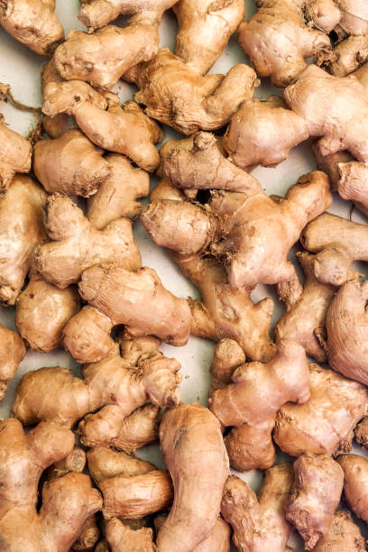
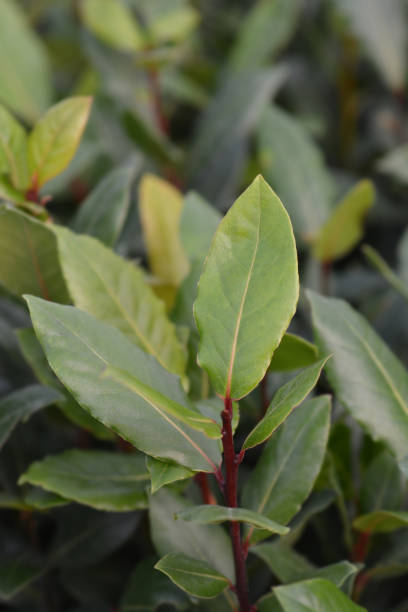
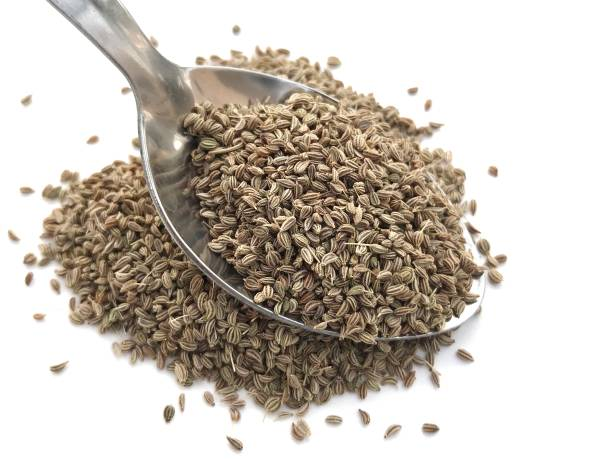
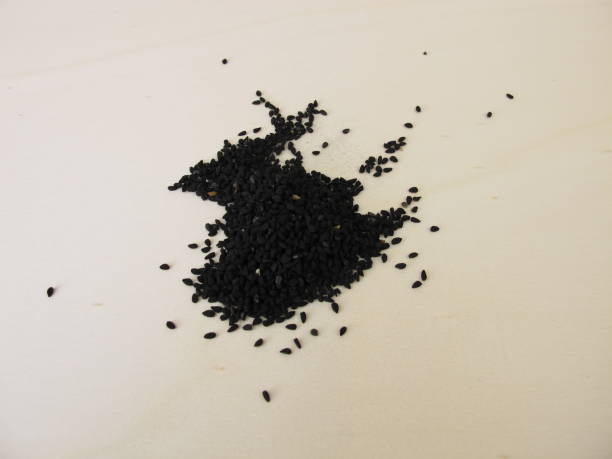

Coriander (Coriandrum sativum) is a cool-season herb, and its cultivation is typically associated with specific seasons.
Coriander is a cool-season crop, and it prefers to grow in cooler temperatures rather than extreme heat. It is often cultivated in the fall, winter, or early spring, depending on the local climate.
Here are some states where coriander is commonly cultivated and has a notable market presence like Rajasthan,Gujarat,Andhrapradesh,
madhyapradesh,Uttarpradesh.
Coriander prefers well-drained soils to prevent waterlogging, which can be detrimental to its roots. Sandy loam or loamy soils are ideal, as they offer good drainage and aeration.
Coriander grows well in slightly acidic to neutral soil conditions. A pH range of 6.0 to 7.5 is considered suitable. Soil testing can help determine and adjust the pH if necessary.
Enriching the soil with organic matter, such as well-rotted compost or aged manure, enhances fertility and provides essential nutrients for healthy coriander growth
The time it takes for coriander to reach maturity varies, but it's generally around 45 to 70 days from seed germination to harvest.
Coriander is a staple herb in Indian cuisine, and its demand is widespread across the country. Its demand is high in states like Maharashtra,Gujarat,Andhrapradesh,
Karnataka,Rajasthan.
కొత్తిమీర (కొరియాండ్రమ్ సాటివమ్) అనేది చల్లని-సీజన్ హెర్బ్, మరియు దీని సాగు సాధారణంగా నిర్దిష్ట సీజన్లతో ముడిపడి ఉంటుంది.
కొత్తిమీర ఒక చల్లని-కాలపు పంట, మరియు ఇది తీవ్రమైన వేడి కంటే చల్లని ఉష్ణోగ్రతలలో పెరగడానికి ఇష్టపడుతుంది. ఇది తరచుగా స్థానిక వాతావరణాన్ని బట్టి పతనం, శీతాకాలం లేదా వసంత ఋతువులో సాగు చేయబడుతుంది.
కొత్తిమీరను సాధారణంగా పండించే కొన్ని రాష్ట్రాలు ఇక్కడ ఉన్నాయి మరియు రాజస్థాన్, గుజరాత్, ఆంధ్ర ప్రదేశ్, మధ్యప్రదేశ్, ఉత్తరప్రదేశ్ వంటి ప్రముఖ మార్కెట్ ఉనికిని కలిగి ఉంది.
కొత్తిమీర నీటి ఎండిపోవడాన్ని నివారించడానికి బాగా ఎండిపోయిన నేలలను ఇష్టపడుతుంది, ఇది దాని మూలాలకు హానికరం. ఇసుక లోమ్ లేదా లోమీ నేలలు అనువైనవి, అవి మంచి పారుదల మరియు గాలిని అందిస్తాయి.
కొత్తిమీర కొద్దిగా ఆమ్లం మరియు తటస్థ నేల పరిస్థితులలో బాగా పెరుగుతుంది. 6.0 నుండి 7.5 pH పరిధి తగినదిగా పరిగణించబడుతుంది. అవసరమైతే మట్టి పరీక్ష pHని నిర్ణయించడానికి మరియు సర్దుబాటు చేయడంలో సహాయపడుతుంది.
బాగా కుళ్ళిన కంపోస్ట్ లేదా వృద్ధాప్య ఎరువు వంటి సేంద్రీయ పదార్థాలతో నేలను సుసంపన్నం చేయడం వల్ల సంతానోత్పత్తి పెరుగుతుంది మరియు ఆరోగ్యకరమైన కొత్తిమీర పెరుగుదలకు అవసరమైన పోషకాలను అందిస్తుంది.
కొత్తిమీర పరిపక్వతను చేరుకోవడానికి పట్టే సమయం మారుతూ ఉంటుంది, అయితే ఇది సాధారణంగా విత్తనాల అంకురోత్పత్తి నుండి కోత వరకు 45 నుండి 70 రోజుల వరకు ఉంటుంది.
కొత్తిమీర భారతీయ వంటకాలలో ప్రధానమైన మూలిక, మరియు దాని డిమాండ్ దేశవ్యాప్తంగా విస్తృతంగా ఉంది. మహారాష్ట్ర, గుజరాత్, ఆంధ్రప్రదేశ్, కర్నాటక, రాజస్థాన్ వంటి రాష్ట్రాల్లో దీని డిమాండ్ ఎక్కువగా ఉంది.
6. CUMIN / 6. జీలకర్ర

Cumin (Cuminum cyminum) is typically grown as a warm-season crop.is cultivated during periods of relatively high temperatures. It requires warmth for germination and optimal growth.
In many regions, cumin is sown during the spring or early summer when temperatures are consistently warm. This allows for successful germination and vigorous growth.
Cumin plants thrive in temperatures between 20 to 30 degrees Celsius (68 to 86 degrees Fahrenheit). Extreme cold temperatures can adversely affect germination and early growth.
Here are some states in India where cumin is commonly cultivated and has a notable market presence like Gujarat,Rajasthan,Uttarpradesh,
madhyapradesh.
Cumin prefers well-drained soils to prevent waterlogging, which can be detrimental to its roots. Sandy loam or loamy soils with good drainage are ideal.
Cumin grows well in slightly alkaline to neutral soils. A pH range of 6.8 to 7.5 is considered suitable. Soil testing can help determine and adjust the pH if necessary.
Enriching the soil with organic matter, such as well-rotted compost or aged manure, enhances fertility and provides essential nutrients for healthy cumin growth.
The time it takes for cumin to reach maturity varies, but it's generally around 100 to 120 days from sowing to harvest.some states where the demand for cumin is often higher include Gujarat,
Rajasthan,Uttarpradesh,
madhyapradesh,Andhrapradesh.
జీలకర్ర (కుమినియం సైమినమ్) సాధారణంగా వెచ్చని-కాలపు పంటగా పండిస్తారు. సాపేక్షంగా అధిక ఉష్ణోగ్రతల కాలంలో సాగు చేస్తారు. ఇది అంకురోత్పత్తి మరియు సరైన పెరుగుదలకు వెచ్చదనం అవసరం.
అనేక ప్రాంతాలలో, జీలకర్ర వసంతకాలంలో లేదా వేసవి ప్రారంభంలో ఉష్ణోగ్రతలు స్థిరంగా వెచ్చగా ఉన్నప్పుడు విత్తుతారు. ఇది విజయవంతమైన అంకురోత్పత్తి మరియు బలమైన పెరుగుదలకు అనుమతిస్తుంది.
జీలకర్ర మొక్కలు 20 నుండి 30 డిగ్రీల సెల్సియస్ (68 నుండి 86 డిగ్రీల ఫారెన్హీట్) మధ్య ఉష్ణోగ్రతలలో వృద్ధి చెందుతాయి. విపరీతమైన చల్లని ఉష్ణోగ్రతలు అంకురోత్పత్తి మరియు ప్రారంభ పెరుగుదలను ప్రతికూలంగా ప్రభావితం చేస్తాయి.
భారతదేశంలో జీలకర్రను సాధారణంగా పండించే కొన్ని రాష్ట్రాలు ఇక్కడ ఉన్నాయి మరియు గుజరాత్, రాజస్థాన్, ఉత్తరప్రదేశ్, మధ్యప్రదేశ్ వంటి ప్రముఖ మార్కెట్ ఉనికిని కలిగి ఉన్నాయి.
నీటి ఎద్దడిని నివారించడానికి జీలకర్ర బాగా ఎండిపోయిన నేలలను ఇష్టపడుతుంది, ఇది దాని మూలాలకు హానికరం. మంచి పారుదల ఉన్న ఇసుక లోమీ లేదా లోమీ నేలలు అనువైనవి.
జీలకర్ర కొద్దిగా ఆల్కలీన్ నుండి తటస్థ నేలల్లో బాగా పెరుగుతుంది. 6.8 నుండి 7.5 pH పరిధి తగినదిగా పరిగణించబడుతుంది. అవసరమైతే మట్టి పరీక్ష pHని నిర్ణయించడానికి మరియు సర్దుబాటు చేయడంలో సహాయపడుతుంది.
బాగా కుళ్ళిన కంపోస్ట్ లేదా వృద్ధాప్య ఎరువు వంటి సేంద్రియ పదార్ధాలతో నేలను సుసంపన్నం చేయడం వల్ల సంతానోత్పత్తిని పెంచుతుంది మరియు ఆరోగ్యకరమైన జీలకర్ర పెరుగుదలకు అవసరమైన పోషకాలను అందిస్తుంది.
జీలకర్ర పరిపక్వతకు పట్టే సమయం మారుతూ ఉంటుంది, అయితే ఇది సాధారణంగా విత్తినప్పటి నుండి కోతకు 100 నుండి 120 రోజులు పడుతుంది. జీలకర్రకు డిమాండ్ ఎక్కువగా ఉండే కొన్ని రాష్ట్రాల్లో గుజరాత్, రాజస్థాన్, ఉత్తరప్రదేశ్, మధ్యప్రదేశ్, ఆంధ్ర ప్రదేశ్ ఉన్నాయి.
7. FENNEL / 7. సోంపు గింజలు
Fennel (Foeniculum vulgare) is a versatile herb that is commonly grown for its aromatic seeds and flavorful foliage.
For fennel seed production, the crop is generally grown as an annual in cooler seasons. It is often planted in late fall or early spring. Fennel seeds are typically sown in the fall or early spring to take advantage of cooler temperatures. The plant requires a longer growing season to produce mature seeds.
Here are some states where fennel is commonly cultivated and has notable market presence like Gujarat,Rajasthan,Uttarpradesh,
madhyapradesh,
Punjab.Fennel prefers well-drained soils to prevent waterlogging, which can be detrimental to its roots. Sandy loam or loamy soils with good drainage are ideal.
Fennel grows well in slightly acidic to slightly alkaline soils. A pH range of 6.0 to 7.5 is considered suitable. Soil testing can help determine and adjust the pH if necessary.
Enriching the soil with organic matter, such as well-rotted compost or aged manure, enhances fertility and provides essential nutrients for healthy fennel growth.
The time it takes for fennel to reach maturity varies but is generally around 90 to 115 days from seed sowing to harvest.
ఫెన్నెల్ (ఫోనికులం వల్గేర్) అనేది ఒక బహుముఖ మూలిక, దీనిని సాధారణంగా సుగంధ విత్తనాలు మరియు సువాసనగల ఆకుల కోసం పెంచుతారు.
ఫెన్నెల్ గింజల ఉత్పత్తి కోసం, పంటను సాధారణంగా చల్లని సీజన్లలో వార్షికంగా పండిస్తారు. ఇది తరచుగా పతనం చివరలో లేదా వసంత ఋతువు ప్రారంభంలో పండిస్తారు. ఫెన్నెల్ గింజలు సాధారణంగా పతనం లేదా వసంత ఋతువులో చల్లటి ఉష్ణోగ్రతల ప్రయోజనాన్ని పొందడానికి విత్తుతారు. పరిపక్వ విత్తనాలను ఉత్పత్తి చేయడానికి మొక్కకు ఎక్కువ కాలం పెరుగుతున్న కాలం అవసరం.
ఇక్కడ ఫెన్నెల్ సాధారణంగా సాగు చేయబడే కొన్ని రాష్ట్రాలు మరియు గుజరాత్, రాజస్థాన్, ఉత్తరప్రదేశ్, మధ్యప్రదేశ్, పంజాబ్ వంటి ప్రముఖ మార్కెట్ ఉనికిని కలిగి ఉన్నాయి. ఫెన్నెల్ నీటి ఎండిపోవడాన్ని నివారించడానికి బాగా ఎండిపోయిన నేలలను ఇష్టపడుతుంది, ఇది దాని మూలాలకు హానికరం. మంచి పారుదల ఉన్న ఇసుక లోమీ లేదా లోమీ నేలలు అనువైనవి.
ఫెన్నెల్ కొద్దిగా ఆమ్ల నుండి కొద్దిగా క్షార నేలల్లో బాగా పెరుగుతుంది. 6.0 నుండి 7.5 pH పరిధి తగినదిగా పరిగణించబడుతుంది. అవసరమైతే మట్టి పరీక్ష pHని నిర్ణయించడానికి మరియు సర్దుబాటు చేయడంలో సహాయపడుతుంది.
బాగా కుళ్ళిన కంపోస్ట్ లేదా వృద్ధాప్య ఎరువు వంటి సేంద్రియ పదార్ధాలతో నేలను సుసంపన్నం చేయడం వల్ల సంతానోత్పత్తిని పెంచుతుంది మరియు ఆరోగ్యకరమైన సోపు పెరుగుదలకు అవసరమైన పోషకాలను అందిస్తుంది.
ఫెన్నెల్ పరిపక్వతను చేరుకోవడానికి పట్టే సమయం మారుతూ ఉంటుంది కానీ సాధారణంగా విత్తనం విత్తినప్పటి నుండి కోత వరకు 90 నుండి 115 రోజులు ఉంటుంది.
8. FENUGREEK / 8. మెంతికూర
Fenugreek (Trigonella foenum-graecum) is a versatile herb and spice that is commonly grown as a cool-season crop in many regions.
Fenugreek is primarily a cool-season crop and is well-suited for cultivation in the fall, winter, or early spring, depending on the local climate.
Fenugreek grows best in temperatures ranging from 15 to 25 degrees Celsius (59 to 77 degrees Fahrenheit). It can tolerate cooler temperatures but may not thrive in extremely hot conditions.
In many regions, fenugreek is sown directly in the soil. The seeds can be planted in the fall for winter harvesting or in early spring for a late spring harvest. Sowing can also be done in late winter.
Here are some states where fenugreek is commonly cultivated and has notable market presence like Rajasthan,Gujarat,Uttarpradesh,
madhyapradesh,
Maharashtra.Fenugreek prefers well-drained soils to prevent waterlogging, which can be detrimental to its roots. Sandy loam or loamy soils with good drainage are ideal.
Fenugreek grows well in slightly acidic to slightly alkaline soils. A pH range of 6.0 to 7.5 is considered suitable. Soil testing can help determine and adjust the pH if necessary.
Enriching the soil with organic matter, such as well-rotted compost or aged manure, enhances fertility and provides essential nutrients for healthy fenugreek growth.
Fenugreek seeds typically germinate within 5 to 7 days, and the plants grow rapidly. The entire growth cycle from sowing to harvest is relatively short, usually around 30 to 40 days for leaves and 80 to 90 days for seeds.
మెంతులు (ట్రైగోనెల్లా ఫోనమ్-గ్రేకమ్) అనేది ఒక బహుముఖ మూలిక మరియు సుగంధ ద్రవ్యం, దీనిని సాధారణంగా అనేక ప్రాంతాలలో చల్లని-కాలపు పంటగా పండిస్తారు.
మెంతులు ప్రధానంగా చల్లని-కాలపు పంట మరియు స్థానిక వాతావరణాన్ని బట్టి శరదృతువు, శీతాకాలం లేదా వసంత ఋతువులో సాగు చేయడానికి బాగా సరిపోతాయి.
మెంతులు 15 నుండి 25 డిగ్రీల సెల్సియస్ (59 నుండి 77 డిగ్రీల ఫారెన్హీట్) వరకు ఉష్ణోగ్రతలలో బాగా పెరుగుతాయి. ఇది చల్లని ఉష్ణోగ్రతలను తట్టుకోగలదు కానీ చాలా వేడి పరిస్థితుల్లో వృద్ధి చెందదు.
అనేక ప్రాంతాలలో, మెంతులు నేరుగా నేలలో విత్తుతారు. విత్తనాలను శీతాకాలపు కోత కోసం పతనం లేదా వసంత ఋతువు చివరిలో పంట కోసం వసంత ఋతువులో నాటవచ్చు. విత్తడం శీతాకాలం చివరిలో కూడా చేయవచ్చు.
మెంతులు సాధారణంగా పండించే కొన్ని రాష్ట్రాలు ఇక్కడ ఉన్నాయి మరియు రాజస్థాన్, గుజరాత్, ఉత్తరప్రదేశ్, మధ్యప్రదేశ్, మహారాష్ట్ర వంటి ప్రముఖ మార్కెట్ ఉనికిని కలిగి ఉంది. మెంతులు నీటి ఎద్దడిని నివారించడానికి బాగా ఎండిపోయిన నేలలను ఇష్టపడతాయి, ఇది దాని మూలాలకు హానికరం. మంచి పారుదల ఉన్న ఇసుక లోమీ లేదా లోమీ నేలలు అనువైనవి.
మెంతులు కొద్దిగా ఆమ్ల మరియు కొద్దిగా క్షార నేలల్లో బాగా పెరుగుతాయి. 6.0 నుండి 7.5 pH పరిధి తగినదిగా పరిగణించబడుతుంది. అవసరమైతే మట్టి పరీక్ష pHని నిర్ణయించడానికి మరియు సర్దుబాటు చేయడంలో సహాయపడుతుంది.
బాగా కుళ్ళిన కంపోస్ట్ లేదా వృద్ధాప్య ఎరువు వంటి సేంద్రియ పదార్థాలతో నేలను సుసంపన్నం చేయడం వల్ల సంతానోత్పత్తి పెరుగుతుంది మరియు ఆరోగ్యకరమైన మెంతి పెరుగుదలకు అవసరమైన పోషకాలను అందిస్తుంది.
మెంతి గింజలు సాధారణంగా 5 నుండి 7 రోజులలో మొలకెత్తుతాయి మరియు మొక్కలు వేగంగా పెరుగుతాయి. విత్తడం నుండి పంట వరకు మొత్తం పెరుగుదల చక్రం చాలా తక్కువగా ఉంటుంది, సాధారణంగా ఆకులకు 30 నుండి 40 రోజులు మరియు విత్తనాలకు 80 నుండి 90 రోజులు.
9. GINGER / 9. అల్లం

Ginger (Zingiber officinale) is typically grown in tropical and subtropical regions.Ginger is a warm-season crop and is usually grown during the warmer months of the year. It requires a long growing season for the development of rhizomes (underground stems that are harvested for ginger).
In tropical regions, where temperatures are consistently warm, ginger can be planted throughout the year. However, there are optimal planting times based on local conditions.
In subtropical regions, ginger is often planted in the spring or early summer, after the last frost has passed. This allows the plant to take advantage of the warm temperatures for robust growth.
Ginger plants prefer temperatures between 77°F to 86°F (25°C to 30°C). They are sensitive to frost, and temperatures below 50°F (10°C) can damage the plant.
Here are some states in India where ginger is commonly cultivated and has notable market presence like Kerala,AndhraPradesh,Assam,
Karnataka,Odisha,
Meghalaya,Sikkim,Uttarakhand.
Ginger (Zingiber officinale) thrives in well-drained and fertile soils.Ginger requires well-drained soils to prevent waterlogging, which can lead to root rot and other diseases. Sandy loam or loamy soils are considered ideal for ginger cultivation.
Enriching the soil with organic matter is beneficial for ginger. Well-rotted compost or aged manure can improve soil structure, water retention, and nutrient content.
Ginger prefers slightly acidic to slightly alkaline soils with a pH ranging from 6.0 to 6.5. Soil testing can help determine the pH level, and amendments can be made if necessary.
Ginger has a relatively long growing period, usually around 8 to 10 months from planting to harvest. During this time, the plants require regular care, including watering, weeding, and monitoring for pests and diseases.
అల్లం (జింగిబర్ అఫిసినేల్) సాధారణంగా ఉష్ణమండల మరియు ఉపఉష్ణమండల ప్రాంతాలలో పండిస్తారు. అల్లం ఒక వెచ్చని-కాలపు పంట మరియు సాధారణంగా సంవత్సరంలో వెచ్చని నెలల్లో పండిస్తారు. ఇది రైజోమ్ల అభివృద్ధికి (అల్లం కోసం పండించిన భూగర్భ కాడలు) సుదీర్ఘ పెరుగుతున్న కాలం అవసరం.
ఉష్ణమండల ప్రాంతాలలో, ఉష్ణోగ్రతలు స్థిరంగా వెచ్చగా ఉంటాయి, అల్లం ఏడాది పొడవునా నాటవచ్చు. అయినప్పటికీ, స్థానిక పరిస్థితుల ఆధారంగా సరైన నాటడం సమయాలు ఉన్నాయి.
ఉపఉష్ణమండల ప్రాంతాలలో, అల్లం తరచుగా వసంత ఋతువులో లేదా వేసవి ప్రారంభంలో చివరి మంచు గడిచిన తర్వాత పండిస్తారు. ఇది మొక్క బలమైన పెరుగుదల కోసం వెచ్చని ఉష్ణోగ్రతల ప్రయోజనాన్ని పొందేందుకు అనుమతిస్తుంది.
అల్లం మొక్కలు 77°F నుండి 86°F (25°C నుండి 30°C) మధ్య ఉష్ణోగ్రతలను ఇష్టపడతాయి. అవి మంచుకు సున్నితంగా ఉంటాయి మరియు 50°F (10°C) కంటే తక్కువ ఉష్ణోగ్రతలు మొక్కను దెబ్బతీస్తాయి.
భారతదేశంలో అల్లం సాధారణంగా పండించే కొన్ని రాష్ట్రాలు ఇక్కడ ఉన్నాయి మరియు కేరళ, ఆంధ్రప్రదేశ్, అస్సాం, కర్నాటక, ఒడిశా, మేఘాలయ, సిక్కిం, ఉత్తరాఖండ్ వంటి ప్రముఖ మార్కెట్ ఉనికిని కలిగి ఉంది.
అల్లం (జింగిబర్ అఫిసినేల్) బాగా ఎండిపోయిన మరియు సారవంతమైన నేలల్లో వృద్ధి చెందుతుంది. నీటి ఎండిపోవడాన్ని నివారించడానికి అల్లం బాగా ఎండిపోయిన నేలలు అవసరం, ఇది రూట్ రాట్ మరియు ఇతర వ్యాధులకు దారితీస్తుంది. ఇసుక లోమీ లేదా లోమీ నేలలు అల్లం సాగుకు అనువైనవిగా పరిగణించబడతాయి.
సేంద్రియ పదార్ధాలతో నేలను సుసంపన్నం చేయడం అల్లం కోసం ప్రయోజనకరంగా ఉంటుంది. బాగా కుళ్ళిన కంపోస్ట్ లేదా వృద్ధాప్య ఎరువు నేల నిర్మాణం, నీటి నిలుపుదల మరియు పోషక పదార్ధాలను మెరుగుపరుస్తుంది.
అల్లం 6.0 నుండి 6.5 వరకు pHతో కొద్దిగా ఆమ్లత్వం మరియు కొద్దిగా ఆల్కలీన్ నేలలను ఇష్టపడుతుంది. మట్టి పరీక్ష pH స్థాయిని గుర్తించడంలో సహాయపడుతుంది మరియు అవసరమైతే సవరణలు చేయవచ్చు.
అల్లం సాపేక్షంగా ఎక్కువ కాలం పెరుగుతుంది, సాధారణంగా నాటడం నుండి పంట వరకు 8 నుండి 10 నెలల వరకు ఉంటుంది. ఈ సమయంలో, మొక్కలకు నీరు త్రాగుట, కలుపు తీయుట మరియు తెగుళ్ళు మరియు వ్యాధుల పర్యవేక్షణతో సహా క్రమమైన సంరక్షణ అవసరం.
10. NUTMEG / 10.జాజికాయ
Nutmeg (Myristica fragrans) is a tropical evergreen tree,is a tropical crop and does not have a specific growing season like crops in temperate climates. It can be grown throughout the year in regions with a consistent tropical climate.
Nutmeg trees thrive in warm and humid conditions. They require a tropical climate with temperatures ranging between 77°F to 95°F (25°C to 35°C).
Nutmeg is Majorly grown in States like Kerala,
Karnataka.Nutmeg trees thrive in well-drained soils. Waterlogged conditions can be detrimental to the roots, leading to diseases and poor growth. Sandy loam or loamy soils with good drainage are suitable.
Nutmeg prefers slightly acidic to slightly alkaline soils with a pH range of 6.0 to 7.5. Conducting a soil test can help determine the pH of the soil, and necessary amendments can be made to achieve the preferred range.
Enriching the soil with organic matter, such as well-rotted compost or aged manure, enhances fertility and improves the soil structure. Nutmeg trees benefit from nutrient-rich soils.
Nutmeg is a tropical plant and thrives in warm temperatures. It requires a minimum temperature of about 60°F (15°C) for optimal growth.
Nutmeg trees take several years to mature and start producing fruit. The time from planting to the first harvest of nutmeg can range from 7 to 9 years or longer. Patience is essential in nutmeg cultivation.
జాజికాయ (మిరిస్టికా ఫ్రాగ్రాన్స్) ఒక ఉష్ణమండల సతత హరిత చెట్టు, ఇది ఒక ఉష్ణమండల పంట మరియు సమశీతోష్ణ వాతావరణంలో పంటల వంటి నిర్దిష్ట పెరుగుతున్న కాలం లేదు. ఇది స్థిరమైన ఉష్ణమండల వాతావరణం ఉన్న ప్రాంతాల్లో ఏడాది పొడవునా పెంచవచ్చు.
జాజికాయ చెట్లు వెచ్చని మరియు తేమతో కూడిన పరిస్థితులలో వృద్ధి చెందుతాయి. వాటికి 77°F నుండి 95°F (25°C నుండి 35°C) మధ్య ఉష్ణోగ్రతలు ఉండే ఉష్ణమండల వాతావరణం అవసరం.
జాజికాయను కేరళ, కర్ణాటక వంటి రాష్ట్రాల్లో ఎక్కువగా పండిస్తారు. జాజికాయ చెట్లు బాగా ఎండిపోయిన నేలల్లో వృద్ధి చెందుతాయి. నీటితో నిండిన పరిస్థితులు మూలాలకు హానికరం, ఇది వ్యాధులు మరియు పేలవమైన పెరుగుదలకు దారితీస్తుంది. మంచి నీటి పారుదల ఉన్న ఇసుక లేదా లోమీ నేలలు అనుకూలం.
జాజికాయ 6.0 నుండి 7.5 pH పరిధితో కొద్దిగా ఆమ్లత్వం మరియు కొద్దిగా ఆల్కలీన్ నేలలను ఇష్టపడుతుంది. నేల పరీక్షను నిర్వహించడం ద్వారా నేల యొక్క pHని గుర్తించడంలో సహాయపడుతుంది మరియు ప్రాధాన్య పరిధిని సాధించడానికి అవసరమైన సవరణలు చేయవచ్చు.
బాగా కుళ్ళిన కంపోస్ట్ లేదా వృద్ధాప్య ఎరువు వంటి సేంద్రియ పదార్థాలతో మట్టిని సుసంపన్నం చేయడం వల్ల సంతానోత్పత్తి పెరుగుతుంది మరియు నేల నిర్మాణాన్ని మెరుగుపరుస్తుంది. జాజికాయ చెట్లు పోషకాలు అధికంగా ఉండే నేలల నుండి ప్రయోజనం పొందుతాయి.
జాజికాయ ఒక ఉష్ణమండల మొక్క మరియు వెచ్చని ఉష్ణోగ్రతలలో వృద్ధి చెందుతుంది. ఇది సరైన పెరుగుదలకు కనిష్ట ఉష్ణోగ్రత 60°F (15°C) అవసరం.
జాజికాయ చెట్లు పరిపక్వం చెందడానికి మరియు ఫలాలను ఉత్పత్తి చేయడం ప్రారంభించడానికి చాలా సంవత్సరాలు పడుతుంది. జాజికాయ నాటడం నుండి మొదటి పంట వరకు సమయం 7 నుండి 9 సంవత్సరాలు లేదా అంతకంటే ఎక్కువ కాలం ఉంటుంది. జాజికాయ సాగులో సహనం అవసరం.
11. TURMERIC / 11.పసుపు
Turmeric (Curcuma longa) is a tropical plant and is typically grown as a perennial in regions with warm temperatures. The cultivation of turmeric is not strictly limited to a single season, but it is often associated with specific planting times based on local climatic conditions.
Turmeric requires warm temperatures and high humidity for optimal growth. It is often grown in areas with a temperature range of 68°F to 86°F (20°C to 30°C). The plant thrives in well-drained, loamy soils.
Here are some key states in India where turmeric is extensively cultivated and has a significant market presence like Andhrapradesh,Telangana,Tamilnadu,
Karnataka,
Odisha,Maharashtra,Kerala,Westbengal.
Loamy soils that are a balanced mix of sand, silt, and clay provide good drainage, aeration, and water retention. This type of soil supports the development of healthy turmeric rhizomes.
Turmeric thrives in slightly acidic to neutral soils with a pH range of 6.0 to 7.5. Conducting a soil test can help determine the pH of the soil, and necessary amendments can be made to achieve the preferred range.
Enriching the soil with organic matter, such as well-rotted compost or aged manure, improves soil fertility and structure. Turmeric benefits from nutrient-rich soils.
Turmeric plants require regular care, including watering, weeding, and protection from pests and diseases, during their growth period of 7 to 9 months.
Harvesting is typically done once the leaves start to turn yellow and die back. Harvesting involves carefully digging up the rhizomes from the soil. The time from planting to harvesting is a crucial period for the development of quality rhizomes.
పసుపు (కుర్కుమా లాంగా) ఒక ఉష్ణమండల మొక్క మరియు సాధారణంగా వెచ్చని ఉష్ణోగ్రతలు ఉన్న ప్రాంతాల్లో శాశ్వతంగా పండిస్తారు. పసుపు సాగు అనేది ఒక సీజన్కు మాత్రమే పరిమితం కాదు, అయితే ఇది తరచుగా స్థానిక వాతావరణ పరిస్థితుల ఆధారంగా నిర్దిష్ట నాటడం సమయాలతో ముడిపడి ఉంటుంది.
పసుపుకు సరైన పెరుగుదలకు వెచ్చని ఉష్ణోగ్రతలు మరియు అధిక తేమ అవసరం. ఇది తరచుగా 68°F నుండి 86°F (20°C నుండి 30°C) ఉష్ణోగ్రత పరిధి ఉన్న ప్రాంతాల్లో పండిస్తారు. మొక్క బాగా ఎండిపోయిన, లోమీ నేలల్లో బాగా పెరుగుతుంది.
భారతదేశంలో పసుపును విస్తృతంగా పండించే కొన్ని ముఖ్య రాష్ట్రాలు ఇక్కడ ఉన్నాయి మరియు ఆంధ్రప్రదేశ్, తెలంగాణ, తమిళనాడు, కర్నాటక, ఒడిశా, మహారాష్ట్ర, కేరళ, పశ్చిమబెంగాల్ వంటి ముఖ్యమైన మార్కెట్ ఉనికిని కలిగి ఉంది.
ఇసుక, సిల్ట్ మరియు బంకమట్టి యొక్క సమతుల్య మిశ్రమం అయిన లోమీ నేలలు మంచి పారుదల, గాలి మరియు నీటిని నిలుపుదలని అందిస్తాయి. ఈ రకమైన నేల ఆరోగ్యకరమైన పసుపు రైజోమ్ల అభివృద్ధికి తోడ్పడుతుంది.
పసుపు 6.0 నుండి 7.5 pH పరిధితో కొద్దిగా ఆమ్లం నుండి తటస్థ నేలల్లో వృద్ధి చెందుతుంది. నేల పరీక్షను నిర్వహించడం ద్వారా నేల యొక్క pHని గుర్తించడంలో సహాయపడుతుంది మరియు ప్రాధాన్య పరిధిని సాధించడానికి అవసరమైన సవరణలు చేయవచ్చు.
బాగా కుళ్ళిన కంపోస్ట్ లేదా వృద్ధాప్య ఎరువు వంటి సేంద్రియ పదార్థాలతో మట్టిని సుసంపన్నం చేయడం వల్ల నేల సంతానోత్పత్తి మరియు నిర్మాణం మెరుగుపడుతుంది. పోషకాలు అధికంగా ఉండే నేలల నుండి పసుపు ప్రయోజనాలు.
పసుపు మొక్కలకు 7 నుండి 9 నెలల పెరుగుదల కాలంలో నీరు త్రాగుట, కలుపు తీయుట మరియు తెగుళ్ళు మరియు వ్యాధుల నుండి రక్షణతో సహా క్రమమైన సంరక్షణ అవసరం.
ఆకులు పసుపు రంగులోకి మారడం మరియు తిరిగి చనిపోవడం ప్రారంభించిన తర్వాత హార్వెస్టింగ్ సాధారణంగా జరుగుతుంది. హార్వెస్టింగ్ అనేది నేల నుండి రైజోమ్లను జాగ్రత్తగా త్రవ్వడం. నాణ్యమైన రైజోమ్ల అభివృద్ధికి నాటడం నుండి కోత వరకు సమయం చాలా ముఖ్యమైనది.
12. STAR ANISE / 12.స్టార్ సోంపు
Star anise (Illicium verum) is typically grown in subtropical and tropical regions. It is a warm-climate plant, and the cultivation of star anise is not strictly limited to a specific season like crops in temperate climates.
Star anise thrives in warm temperatures. It is well-suited to subtropical and tropical climates with temperatures ranging between 68°F to 86°F (20°C to 30°C).
In India, the states of Arunachal Pradesh and Meghalaya are known for cultivating star anise. These states, located in the northeastern part of the country, provide suitable agro-climatic conditions for the growth of star anise plants. The hilly terrain and favorable climate contribute to the cultivation of this aromatic spice.
Star anise plants prefer well-drained soils to prevent waterlogging, which can lead to root rot. Sandy loam or loamy soils with good drainage are generally suitable.
Star anise thrives in slightly acidic to neutral soils with a pH range of 6.0 to 7.0. Conducting a soil test can help determine the pH of the soil, and necessary amendments can be made to achieve the preferred range.
Enriching the soil with organic matter, such as well-rotted compost or aged manure, improves soil fertility and structure. Star anise benefits from nutrient-rich soils.
Star anise plants typically take several years to reach maturity and start producing fruits. The exact time can vary based on factors such as climate, soil conditions, and cultivation practices. It may take around 6 to 8 years for a star anise plant to become fully productive.
స్టార్ సోంపు (ఇలిసియం వెరమ్) సాధారణంగా ఉపఉష్ణమండల మరియు ఉష్ణమండల ప్రాంతాలలో పెరుగుతుంది. ఇది వెచ్చని-వాతావరణ మొక్క, మరియు స్టార్ సోంపు సాగు అనేది సమశీతోష్ణ వాతావరణంలో పంటల వంటి నిర్దిష్ట సీజన్కు ఖచ్చితంగా పరిమితం కాదు.
స్టార్ సోంపు వెచ్చని ఉష్ణోగ్రతలలో వృద్ధి చెందుతుంది. ఇది 68°F నుండి 86°F (20°C నుండి 30°C) మధ్య ఉష్ణోగ్రతలతో ఉపఉష్ణమండల మరియు ఉష్ణమండల వాతావరణాలకు బాగా సరిపోతుంది.
భారతదేశంలో, అరుణాచల్ ప్రదేశ్ మరియు మేఘాలయ రాష్ట్రాలు స్టార్ సోంపు సాగులో ప్రసిద్ధి చెందాయి. దేశంలోని ఈశాన్య భాగంలో ఉన్న ఈ రాష్ట్రాలు స్టార్ సోంపు మొక్కల పెరుగుదలకు అనువైన వ్యవసాయ-వాతావరణ పరిస్థితులను అందిస్తాయి. కొండ భూభాగం మరియు అనుకూలమైన వాతావరణం ఈ సుగంధ ద్రవ్యాల సాగుకు దోహదం చేస్తాయి.
స్టార్ సోంపు మొక్కలు నీటి ఎండిపోవడాన్ని నివారించడానికి బాగా ఎండిపోయిన నేలలను ఇష్టపడతాయి, ఇది రూట్ తెగులుకు దారితీస్తుంది. మంచి పారుదల ఉన్న ఇసుక లోమ్ లేదా లోమీ నేలలు సాధారణంగా అనుకూలంగా ఉంటాయి.
స్టార్ సోంపు 6.0 నుండి 7.0 pH పరిధితో కొద్దిగా ఆమ్లం నుండి తటస్థ నేలల్లో వృద్ధి చెందుతుంది. నేల పరీక్షను నిర్వహించడం ద్వారా నేల యొక్క pHని గుర్తించడంలో సహాయపడుతుంది మరియు ప్రాధాన్య పరిధిని సాధించడానికి అవసరమైన సవరణలు చేయవచ్చు.
బాగా కుళ్ళిన కంపోస్ట్ లేదా వృద్ధాప్య ఎరువు వంటి సేంద్రియ పదార్థాలతో మట్టిని సుసంపన్నం చేయడం వల్ల నేల సంతానోత్పత్తి మరియు నిర్మాణం మెరుగుపడుతుంది. పోషకాలు అధికంగా ఉండే నేలల నుండి స్టార్ సోంపు ప్రయోజనం పొందుతుంది.
స్టార్ సోంపు మొక్కలు సాధారణంగా పరిపక్వతకు చేరుకోవడానికి మరియు పండ్లను ఉత్పత్తి చేయడం ప్రారంభించేందుకు చాలా సంవత్సరాలు పడుతుంది. వాతావరణం, నేల పరిస్థితులు మరియు సాగు పద్ధతులు వంటి అంశాల ఆధారంగా ఖచ్చితమైన సమయం మారవచ్చు. స్టార్ సోంపు మొక్క పూర్తిగా ఫలవంతం కావడానికి దాదాపు 6 నుండి 8 సంవత్సరాలు పట్టవచ్చు..
13. BAYLEAF / 13.బే ఆకు

Bay leaf, often referred to as laurel or bay laurel (Laurus nobilis), is an evergreen aromatic tree commonly used as a culinary herb. The cultivation of bay leaf is not strictly limited to a specific season, as it is typically grown as a perennial in regions with mild climates.
Bay leaf is well-suited for year-round cultivation in regions with mild temperatures and without severe frost. It is often grown as a perennial shrub or small tree.
Bay leaf cultivation is found in parts of the Himalayan region, where the climate is relatively cooler and more favorable for the bay laurel tree. States like Himachal Pradesh and Uttarakhand may have some cultivation.
Some regions in the Western Ghats, which have a more tropical climate, may also see bay leaf cultivation. States like
Karnataka and Kerala are known for spice cultivation, and bay leaf may be grown in certain areas.
Bay laurel plants thrive in well-drained soil that prevents waterlogging. Good drainage is essential to avoid root rot and other issues. Sandy loam or loamy soils are generally suitable.
Bay laurel prefers slightly acidic to neutral soil with a pH range between 6.0 and 7.5. Conducting a soil test can help determine the pH of the soil, and necessary amendments can be made to achieve the preferred range.
Enriching the soil with organic matter, such as well-rotted compost or aged manure, improves soil fertility and structure. Bay laurel benefits from nutrient-rich soils.
It may take around 2 to 4 years or more for bay laurel to become established and start producing leaves.
బే ఆకు, తరచుగా లారెల్ లేదా బే లారెల్ (లారస్ నోబిలిస్) అని పిలుస్తారు, ఇది సతత హరిత సుగంధ చెట్టు, దీనిని సాధారణంగా పాక మూలికగా ఉపయోగిస్తారు. బే ఆకు సాగు నిర్దిష్ట సీజన్కు పరిమితం కాదు, ఎందుకంటే ఇది సాధారణంగా తేలికపాటి వాతావరణం ఉన్న ప్రాంతాల్లో శాశ్వతంగా పెరుగుతుంది.
తేలికపాటి ఉష్ణోగ్రతలు మరియు తీవ్రమైన మంచు లేని ప్రాంతాలలో ఏడాది పొడవునా సాగు చేయడానికి బే ఆకు బాగా సరిపోతుంది. ఇది తరచుగా శాశ్వత పొద లేదా చిన్న చెట్టుగా పెరుగుతుంది.
బే ఆకు సాగు హిమాలయ ప్రాంతంలోని కొన్ని ప్రాంతాల్లో కనిపిస్తుంది, ఇక్కడ వాతావరణం సాపేక్షంగా చల్లగా ఉంటుంది మరియు బే లారెల్ చెట్టుకు మరింత అనుకూలంగా ఉంటుంది. హిమాచల్ ప్రదేశ్, ఉత్తరాఖండ్ వంటి రాష్ట్రాల్లో కొంత సాగు ఉండవచ్చు.
పశ్చిమ కనుమలలోని కొన్ని ప్రాంతాలు, ఎక్కువ ఉష్ణమండల వాతావరణాన్ని కలిగి ఉంటాయి, బే ఆకు సాగును కూడా చూడవచ్చు. కర్నాటక మరియు కేరళ వంటి రాష్ట్రాలు సుగంధ ద్రవ్యాల సాగుకు ప్రసిద్ధి చెందాయి మరియు కొన్ని ప్రాంతాలలో బే ఆకును పండించవచ్చు.
బే లారెల్ మొక్కలు బాగా ఎండిపోయిన నేలలో వృద్ధి చెందుతాయి, ఇది నీటి ఎద్దడిని నివారిస్తుంది. రూట్ రాట్ మరియు ఇతర సమస్యలను నివారించడానికి మంచి పారుదల అవసరం. ఇసుక నేలలు లేదా లోమీ నేలలు సాధారణంగా అనుకూలంగా ఉంటాయి.
బే లారెల్ 6.0 మరియు 7.5 మధ్య pH పరిధితో తటస్థ నేలకు కొద్దిగా ఆమ్లతను ఇష్టపడుతుంది. నేల పరీక్షను నిర్వహించడం ద్వారా నేల యొక్క pHని గుర్తించడంలో సహాయపడుతుంది మరియు ప్రాధాన్య పరిధిని సాధించడానికి అవసరమైన సవరణలు చేయవచ్చు.
బాగా కుళ్ళిన కంపోస్ట్ లేదా వృద్ధాప్య ఎరువు వంటి సేంద్రియ పదార్థాలతో మట్టిని సుసంపన్నం చేయడం వల్ల నేల సంతానోత్పత్తి మరియు నిర్మాణం మెరుగుపడుతుంది. బే లారెల్ పోషకాలు అధికంగా ఉండే నేలల నుండి ప్రయోజనం పొందుతుంది.
బే లారెల్ ఏర్పడటానికి మరియు ఆకులను ఉత్పత్తి చేయడం ప్రారంభించడానికి సుమారు 2 నుండి 4 సంవత్సరాలు లేదా అంతకంటే ఎక్కువ సమయం పట్టవచ్చు.
14. CAROMSEEDS / 14.క్యారోమ్సీడ్స్

Carom seeds, also known as ajwain or bishop's weed, are typically grown in certain seasons, and their cultivation depends on the climate and region.In many regions, carom seeds are sown during the winter season, which provides the cool temperatures they prefer. Winter sowing allows for the development of the plants before the onset of warmer weather.
Carom seeds thrive in temperate climates, and the cool temperatures of the winter season are conducive to their growth. They are often grown as a winter or cool-season herb.
Some states where carom seeds are commonly cultivated include are Gujarat,Rajasthan,
madhyapradesh,
Maharashtra,Uttarpradesh.Carom seeds prefer well-drained soil to prevent waterlogging, which can lead to root rot. Sandy loam or loamy soils with good drainage are generally suitable.
Carom seeds thrive in slightly alkaline to neutral soils with a pH range between 6.0 and 7.5. A slightly alkaline soil is often preferred.
Enriching the soil with organic matter, such as well-rotted compost or aged manure, improves soil fertility and structure. Carom seeds benefit from nutrient-rich soils.
Carom seeds are relatively fast-growing plants, and they can be harvested within a few months after sowing. The time frame from sowing to harvest can typically range from 90 to 120 days.
క్యారమ్ విత్తనాలు, అజ్వైన్ లేదా బిషప్ కలుపు అని కూడా పిలుస్తారు, ఇవి సాధారణంగా కొన్ని సీజన్లలో పెరుగుతాయి మరియు వాటి సాగు వాతావరణం మరియు ప్రాంతంపై ఆధారపడి ఉంటుంది. చాలా ప్రాంతాలలో, క్యారమ్ విత్తనాలను శీతాకాలంలో విత్తుతారు, ఇది వారు ఇష్టపడే చల్లని ఉష్ణోగ్రతలను అందిస్తుంది. శీతాకాలపు విత్తనాలు వెచ్చని వాతావరణం ప్రారంభానికి ముందు మొక్కల అభివృద్ధికి అనుమతిస్తుంది.
క్యారమ్ గింజలు సమశీతోష్ణ వాతావరణంలో వృద్ధి చెందుతాయి మరియు శీతాకాలపు చల్లని ఉష్ణోగ్రతలు వాటి పెరుగుదలకు అనుకూలంగా ఉంటాయి. వాటిని తరచుగా శీతాకాలం లేదా చల్లని-సీజన్ హెర్బ్గా పెంచుతారు.
గుజరాత్, రాజస్థాన్, మధ్యప్రదేశ్, మహారాష్ట్ర, ఉత్తరప్రదేశ్ వంటి కొన్ని రాష్ట్రాలు క్యారమ్ విత్తనాలను సాధారణంగా సాగు చేస్తారు. క్యారమ్ గింజలు నీటి ఎండిపోవడాన్ని నివారించడానికి బాగా ఎండిపోయిన నేలను ఇష్టపడతాయి, ఇది రూట్ తెగులుకు దారితీస్తుంది. మంచి పారుదల ఉన్న ఇసుక లోమ్ లేదా లోమీ నేలలు సాధారణంగా అనుకూలంగా ఉంటాయి.
క్యారమ్ గింజలు 6.0 మరియు 7.5 మధ్య pH పరిధి కలిగిన తటస్థ నేలల్లో కొద్దిగా ఆల్కలీన్ నుండి వృద్ధి చెందుతాయి. కొద్దిగా ఆల్కలీన్ నేల తరచుగా ప్రాధాన్యతనిస్తుంది.
బాగా కుళ్ళిన కంపోస్ట్ లేదా వృద్ధాప్య ఎరువు వంటి సేంద్రియ పదార్థాలతో మట్టిని సుసంపన్నం చేయడం వల్ల నేల సంతానోత్పత్తి మరియు నిర్మాణం మెరుగుపడుతుంది. క్యారమ్ విత్తనాలు పోషకాలు అధికంగా ఉండే నేలల నుండి ప్రయోజనం పొందుతాయి.
క్యారమ్ గింజలు సాపేక్షంగా వేగంగా పెరిగే మొక్కలు, మరియు వాటిని విత్తిన కొన్ని నెలల తర్వాత కోయవచ్చు. విత్తడం నుండి పంట వరకు కాలపరిమితి సాధారణంగా 90 నుండి 120 రోజుల వరకు ఉంటుంది.
15. ASAFOETIDA / 15.ఇంగువ

Asafoetida (also known as hing) is typically grown as a perennial herb, and its cultivation is influenced by the climate and region.In many regions, asafoetida is planted during the autumn or early winter months. Planting during these cooler seasons allows the herb to establish itself before the arrival of warmer weather.
Asafoetida plants thrive in regions with mild temperatures. Cooler weather is conducive to the growth of the plant.Asafoetida plants prefer well-drained soil. Sandy loam or loamy soils with good drainage are generally suitable.
In India, asafoetida cultivation is known to be concentrated in specific states that provide suitable agro-climatic conditions. Some of the states where asafoetida is traditionally cultivated and where it may be sold the most include Himachal Pradesh,Jammu and kashmir,Rajasthan.
Asafoetida plants thrive in neutral to slightly alkaline soil conditions. The preferred pH range is typically between 7.0 and 8.5. Conducting a soil test can help determine the pH of the soil, and necessary amendments can be made.
While asafoetida plants do not require extremely fertile soil, they benefit from soils with moderate fertility. Incorporating organic matter, such as well-rotted compost or aged manure, into the soil can improve its fertility.
Asafoetida plants prefer full sunlight for optimal growth. They are well-suited to open and sunny locations.Asafoetida plants are typically harvested after 3 to 5 years when the roots contain a sufficient amount of resin. Harvesting involves uprooting the plants, extracting the resin, and processing it.
Asafoetida is used in Eastern Indian cuisine, and states like West Bengal, Odisha, and Bihar may have a demand for this spice.Asafoetida is an integral part of various Indian dishes, and its demand is not limited to specific states. It is used in diverse culinary traditions across the country.
ఆసఫోటిడా (హింగ్ అని కూడా పిలుస్తారు) సాధారణంగా శాశ్వత మూలికగా పెరుగుతుంది మరియు దాని సాగు వాతావరణం మరియు ప్రాంతం ద్వారా ప్రభావితమవుతుంది. అనేక ప్రాంతాలలో, శరదృతువు లేదా శీతాకాలపు ప్రారంభ నెలలలో ఇంగువ పండిస్తారు. ఈ చల్లటి సీజన్లలో నాటడం వల్ల వెచ్చని వాతావరణం రాకముందే మూలికలు స్థిరపడతాయి.
ఆసఫోటిడా మొక్కలు తేలికపాటి ఉష్ణోగ్రతలు ఉన్న ప్రాంతాల్లో వృద్ధి చెందుతాయి. చల్లటి వాతావరణం మొక్క ఎదుగుదలకు అనుకూలంగా ఉంటుంది.ఆసుఫోటిడా మొక్కలు బాగా ఎండిపోయిన నేలను ఇష్టపడతాయి. మంచి పారుదల ఉన్న ఇసుక లోమ్ లేదా లోమీ నేలలు సాధారణంగా అనుకూలంగా ఉంటాయి.
భారతదేశంలో, ఇంగువ సాగు అనుకూలమైన వ్యవసాయ-వాతావరణ పరిస్థితులను అందించే నిర్దిష్ట రాష్ట్రాలలో కేంద్రీకృతమై ఉంది. ఆసుఫోటిడా సాంప్రదాయకంగా సాగు చేయబడే కొన్ని రాష్ట్రాలు మరియు హిమాచల్ ప్రదేశ్, జమ్మూ మరియు కాశ్మీర్, రాజస్థాన్ వంటివి ఎక్కువగా విక్రయించబడుతున్నాయి.
ఆసఫోటిడా మొక్కలు తటస్థ మరియు కొద్దిగా క్షార నేల పరిస్థితులలో వృద్ధి చెందుతాయి. ప్రాధాన్య pH పరిధి సాధారణంగా 7.0 మరియు 8.5 మధ్య ఉంటుంది. భూసార పరీక్షను నిర్వహించడం వలన నేల యొక్క pHని గుర్తించడంలో సహాయపడుతుంది మరియు అవసరమైన సవరణలు చేయవచ్చు.
ఇంగువ మొక్కలకు చాలా సారవంతమైన నేల అవసరం లేనప్పటికీ, అవి మితమైన సంతానోత్పత్తి ఉన్న నేలల నుండి ప్రయోజనం పొందుతాయి. బాగా కుళ్ళిన కంపోస్ట్ లేదా వృద్ధాప్య ఎరువు వంటి సేంద్రియ పదార్థాలను మట్టిలో చేర్చడం వల్ల దాని సంతానోత్పత్తిని మెరుగుపరుస్తుంది.
యాసఫోటిడా మొక్కలు సరైన పెరుగుదలకు పూర్తి సూర్యకాంతిని ఇష్టపడతాయి. అవి తెరుచుకునే మరియు ఎండ ప్రదేశాలకు బాగా సరిపోతాయి. ఆసఫోటిడా మొక్కలు సాధారణంగా 3 నుండి 5 సంవత్సరాల తర్వాత వేర్లు తగినంత మొత్తంలో రెసిన్ కలిగి ఉన్నప్పుడు పండించబడతాయి. హార్వెస్టింగ్లో మొక్కలను వేరుచేయడం, రెసిన్ను తీయడం మరియు దానిని ప్రాసెస్ చేయడం వంటివి ఉంటాయి.
ఇంగువను తూర్పు భారతీయ వంటకాలలో ఉపయోగిస్తారు మరియు పశ్చిమ బెంగాల్, ఒడిషా మరియు బీహార్ వంటి రాష్ట్రాలు ఈ మసాలాకు డిమాండ్ కలిగి ఉండవచ్చు. ఇంగువ వివిధ భారతీయ వంటకాలలో అంతర్భాగం, మరియు దీని డిమాండ్ నిర్దిష్ట రాష్ట్రాలకు మాత్రమే పరిమితం కాదు. ఇది దేశవ్యాప్తంగా విభిన్న పాక సంప్రదాయాలలో ఉపయోగించబడుతుంది.
16. MUSTARD SEEDS / 16.ఆవ గింజలు


Mustard seeds are typically grown as annual crops, and the season for their cultivation depends on the specific type of mustard and the climate of the region.
Black mustard is primarily grown in cooler climates. The best time to sow black mustard seeds is in the late summer or early fall, and it is harvested in the late fall or early winter.
Brown mustard is a versatile variety that can be grown in a range of climates. It is often planted in the fall or early spring, depending on the local conditions. Harvesting typically takes place in late spring or early summer.
White mustard is generally grown in cooler climates. It is usually planted in the late summer or early fall and harvested in the late fall or early winter.
Mustard seeds are widely cultivated and consumed in various states in India in states like Rajasthan,Uttarpradesh,Haryana,
madhyapradesh,Punjab,Westbengal.
Mustard plants prefer well-drained soil to avoid waterlogging, which can lead to root rot. Sandy loam or loamy soils with good drainage are generally suitable for mustard cultivation.
Mustard plants thrive in slightly acidic to neutral soils. The ideal soil pH range for mustard cultivation is around 6.0 to 7.5.Mustard plants do well in soils with moderate fertility. Incorporating organic matter, such as well-rotted compost or aged manure, into the soil can improve its fertility.
Mustard is a relatively fast-growing crop. The time from sowing to harvest typically ranges from 90 to 120 days, depending on the variety and local climate conditions.
ఆవాలు గింజలు సాధారణంగా వార్షిక పంటలుగా పెరుగుతాయి మరియు వాటి సాగు కోసం సీజన్ నిర్దిష్ట రకం ఆవాలు మరియు ప్రాంతం యొక్క వాతావరణంపై ఆధారపడి ఉంటుంది.
నల్ల ఆవాలు ప్రధానంగా చల్లని వాతావరణంలో పండిస్తారు. నల్ల ఆవపిండి విత్తనాలను విత్తడానికి ఉత్తమ సమయం వేసవి చివరిలో లేదా శరదృతువు ప్రారంభంలో ఉంటుంది మరియు ఇది పతనం చివరిలో లేదా శీతాకాలపు ప్రారంభంలో పండించబడుతుంది.
బ్రౌన్ ఆవాలు ఒక బహుముఖ రకం, దీనిని వివిధ వాతావరణాలలో పెంచవచ్చు. ఇది తరచుగా స్థానిక పరిస్థితులపై ఆధారపడి పతనం లేదా వసంత ఋతువులో పండిస్తారు. హార్వెస్టింగ్ సాధారణంగా వసంత ఋతువు చివరిలో లేదా వేసవి ప్రారంభంలో జరుగుతుంది.
తెల్ల ఆవాలు సాధారణంగా చల్లటి వాతావరణంలో పెరుగుతాయి. ఇది సాధారణంగా వేసవి చివరిలో లేదా శరదృతువు ప్రారంభంలో పండిస్తారు మరియు శరదృతువు చివరిలో లేదా శీతాకాలపు ప్రారంభంలో పండిస్తారు.
భారతదేశంలోని రాజస్థాన్, ఉత్తరప్రదేశ్, హర్యానా, మధ్యప్రదేశ్, పంజాబ్, పశ్చిమబెంగాల్ వంటి రాష్ట్రాల్లోని వివిధ రాష్ట్రాల్లో ఆవాలు విత్తనాలు విస్తృతంగా సాగు చేయబడుతున్నాయి మరియు వినియోగిస్తారు.
ఆవపిండి మొక్కలు నీటి ఎండిపోవడాన్ని నివారించడానికి బాగా ఎండిపోయిన మట్టిని ఇష్టపడతాయి, ఇది రూట్ తెగులుకు దారితీస్తుంది. మంచి నీటి పారుదల ఉన్న ఇసుక లోమ్ లేదా లోమీ నేలలు సాధారణంగా ఆవాల సాగుకు అనుకూలంగా ఉంటాయి.
ఆవపిండి మొక్కలు కొద్దిగా ఆమ్లం నుండి తటస్థ నేలల్లో వృద్ధి చెందుతాయి. ఆవాల పెంపకానికి అనువైన నేల pH పరిధి 6.0 నుండి 7.5 వరకు ఉంటుంది. మస్టర్డ్ మొక్కలు మితమైన సంతానోత్పత్తి ఉన్న నేలల్లో బాగా ఉంటాయి. బాగా కుళ్ళిన కంపోస్ట్ లేదా వృద్ధాప్య ఎరువు వంటి సేంద్రియ పదార్థాలను మట్టిలో చేర్చడం వల్ల దాని సంతానోత్పత్తిని మెరుగుపరుస్తుంది.
ఆవాలు సాపేక్షంగా వేగంగా పెరిగే పంట. విత్తడం నుండి పంట వరకు సమయం సాధారణంగా వివిధ మరియు స్థానిక వాతావరణ పరిస్థితులపై ఆధారపడి 90 నుండి 120 రోజుల వరకు ఉంటుంది.
17. SAFFRON / 17.కుంకుమపువ్వు
Saffron (Crocus sativus) is a unique and valuable spice derived from the dried stigma of the saffron flower.Saffron corms, which are bulb-like structures, are planted in the soil during the autumn season. The exact timing can vary but generally occurs in the months of September to November, depending on the climate of the region.
After planting, saffron corms undergo a period of dormancy during the winter months. This period allows the plants to establish roots and prepare for the spring growing season.
As winter transitions into spring, saffron plants emerge from dormancy and begin to grow. The foliage appears first, followed by the distinctive purple flowers.
In India, saffron cultivation is primarily concentrated in the Union Territory of Jammu and Kashmir. The specific region known for saffron cultivation is Pampore, located in the Pulwama district of Jammu and Kashmir. Pampore is often referred to as the "Saffron Bowl of India."
Saffron plants prefer well-drained soil to prevent waterlogging, which can lead to root rot. Sandy loam or loamy soils are generally suitable for saffron cultivation.
Saffron plants thrive in soils with moderate fertility. Excessive soil fertility may lead to vegetative growth at the expense of flower and stigma development. Organic matter, such as well-rotted compost, can be incorporated into the soil to enhance fertility.
Saffron plants prefer soils with a pH level ranging from neutral to slightly alkaline. The ideal pH range is typically between 6.0 and 8.0.
Saffron is sensitive to high levels of soil salinity. It is important to avoid soils with excessive salt content, as it can negatively impact plant health.
కుంకుమ పువ్వు (క్రోకస్ సాటివస్) అనేది కుంకుమ పువ్వు యొక్క ఎండిన కళంకం నుండి తీసుకోబడిన ఒక ప్రత్యేకమైన మరియు విలువైన మసాలా దినుసు. బల్బ్ లాంటి నిర్మాణాలు అయిన కుంకుమపువ్వులు శరదృతువు కాలంలో మట్టిలో నాటబడతాయి. ఖచ్చితమైన సమయం మారవచ్చు కానీ సాధారణంగా ప్రాంత వాతావరణాన్ని బట్టి సెప్టెంబర్ నుండి నవంబర్ నెలలలో జరుగుతుంది.
నాటిన తరువాత, కుంకుమపువ్వులు చలికాలంలో నిద్రాణస్థితికి లోనవుతాయి. ఈ కాలం మొక్కలు మూలాలను స్థాపించడానికి మరియు వసంతకాలంలో పెరుగుతున్న సీజన్ కోసం సిద్ధం చేయడానికి అనుమతిస్తుంది.
శీతాకాలం వసంతంలోకి మారినప్పుడు, కుంకుమపువ్వు మొక్కలు నిద్రాణస్థితి నుండి ఉద్భవించి పెరగడం ప్రారంభిస్తాయి. ఆకులు మొదటగా కనిపిస్తాయి, తరువాత విలక్షణమైన ఊదా పువ్వులు కనిపిస్తాయి.
భారతదేశంలో, కుంకుమపువ్వు సాగు ప్రధానంగా కేంద్రపాలిత ప్రాంతం జమ్మూ మరియు కాశ్మీర్లో కేంద్రీకృతమై ఉంది. కుంకుమపువ్వు సాగుకు ప్రసిద్ధి చెందిన నిర్దిష్ట ప్రాంతం పాంపోర్, ఇది జమ్మూ మరియు కాశ్మీర్లోని పుల్వామా జిల్లాలో ఉంది. పాంపోర్ను తరచుగా "భారతదేశపు కుంకుమపువ్వు గిన్నె" అని పిలుస్తారు.
కుంకుమపువ్వు మొక్కలు నీటి ఎండిపోవడాన్ని నివారించడానికి బాగా ఎండిపోయిన నేలను ఇష్టపడతాయి, ఇది రూట్ తెగులుకు దారితీస్తుంది. కుంకుమపువ్వు సాగుకు ఇసుక లోమ్ లేదా లోమీ నేలలు సాధారణంగా అనుకూలంగా ఉంటాయి.
కుంకుమపువ్వు మొక్కలు మితమైన సంతానోత్పత్తితో నేలల్లో వృద్ధి చెందుతాయి. అధిక నేల సంతానోత్పత్తి పుష్పం మరియు కళంకం అభివృద్ధి వ్యయంతో ఏపుగా పెరుగుదలకు దారితీయవచ్చు. సంతానోత్పత్తిని పెంపొందించడానికి బాగా కుళ్ళిన కంపోస్ట్ వంటి సేంద్రీయ పదార్థాలను నేలలో కలపవచ్చు.
కుంకుమపువ్వు మొక్కలు pH స్థాయి తటస్థం నుండి కొద్దిగా ఆల్కలీన్ వరకు ఉండే నేలలను ఇష్టపడతాయి. ఆదర్శ pH పరిధి సాధారణంగా 6.0 మరియు 8.0 మధ్య ఉంటుంది.
కుంకుమపువ్వు నేల లవణీయత యొక్క అధిక స్థాయికి సున్నితంగా ఉంటుంది. అధిక ఉప్పు ఉన్న నేలలను నివారించడం చాలా ముఖ్యం, ఎందుకంటే ఇది మొక్కల ఆరోగ్యాన్ని ప్రతికూలంగా ప్రభావితం చేస్తుంది.
18. TAMARIND / 18.చింతపండు
Tamarind (Tamarindus indica) is a tropical tree that bears edible fruit used in various culinary applications. The cultivation of tamarind depends on the local climate and is often grown in tropical and subtropical regions.
Tamarind thrives in tropical climates. It is commonly grown in regions where temperatures remain warm throughout the year.
Tamarind is extensively cultivated in various states of India, including Andhra Pradesh, Telangana, Tamil Nadu,
Karnataka,
Maharashtra, and others. These states have favorable tropical and subtropical climates for tamarind cultivation.
Tamarind trees prefer well-drained soils to prevent waterlogging, which can lead to root rot. Sandy loam or loamy soils with good drainage are ideal.
Tamarind trees can tolerate a range of soil fertility levels, but they generally perform well in moderately fertile soils. Incorporating organic matter, such as compost or well-rotted manure, can enhance soil fertility.
Tamarind trees prefer soils with a slightly acidic to neutral pH range. The ideal pH for tamarind cultivation is around 6.0 to 7.5.
Tamarind trees take several years to mature and start bearing fruit. The time to fruiting can vary but may take around 6-8 years or more.
చింతపండు (టామరిండస్ ఇండికా) అనేది ఒక ఉష్ణమండల చెట్టు, ఇది వివిధ పాక అనువర్తనాల్లో ఉపయోగించే తినదగిన పండ్లను కలిగి ఉంటుంది. చింతపండు సాగు స్థానిక వాతావరణంపై ఆధారపడి ఉంటుంది మరియు తరచుగా ఉష్ణమండల మరియు ఉపఉష్ణమండల ప్రాంతాలలో పెరుగుతుంది.
చింతపండు ఉష్ణమండల వాతావరణంలో బాగా పెరుగుతుంది. ఏడాది పొడవునా ఉష్ణోగ్రతలు వెచ్చగా ఉండే ప్రాంతాలలో ఇది సాధారణంగా పెరుగుతుంది.
ఆంధ్ర ప్రదేశ్, తెలంగాణ, తమిళనాడు, కర్ణాటక, మహారాష్ట్ర మరియు ఇతర రాష్ట్రాలతో సహా భారతదేశంలోని వివిధ రాష్ట్రాల్లో చింతపండు విస్తృతంగా సాగు చేయబడుతుంది. ఈ రాష్ట్రాలు చింతపండు సాగుకు అనుకూలమైన ఉష్ణమండల మరియు ఉపఉష్ణమండల వాతావరణాలను కలిగి ఉన్నాయి.
చింతపండు చెట్లు నీటి ఎద్దడిని నివారించడానికి బాగా ఎండిపోయిన నేలలను ఇష్టపడతాయి, ఇది వేరుకుళ్ళకు దారితీస్తుంది. మంచి పారుదల ఉన్న ఇసుక లోమీ లేదా లోమీ నేలలు అనువైనవి.
చింతపండు చెట్లు నేల సంతానోత్పత్తి స్థాయిలను తట్టుకోగలవు, అయితే అవి సాధారణంగా మధ్యస్తంగా సారవంతమైన నేలల్లో బాగా పనిచేస్తాయి. కంపోస్ట్ లేదా బాగా కుళ్ళిన ఎరువు వంటి సేంద్రియ పదార్థాలను కలుపుకోవడం వల్ల నేల సారవంతం పెరుగుతుంది.
చింతపండు చెట్లు కొద్దిగా ఆమ్లం నుండి తటస్థ pH పరిధి ఉన్న నేలలను ఇష్టపడతాయి. చింతపండు సాగుకు అనువైన pH 6.0 నుండి 7.5 వరకు ఉంటుంది.
చింతపండు చెట్లు పరిపక్వం చెందడానికి మరియు ఫలాలను ఇవ్వడం ప్రారంభించడానికి చాలా సంవత్సరాలు పడుతుంది. ఫలాలు కాసే సమయం మారవచ్చు కానీ దాదాపు 6-8 సంవత్సరాలు లేదా అంతకంటే ఎక్కువ సమయం పట్టవచ్చు.
19. CURRYLEAVES / 19.కరివేపాకు
Curry leaves (Murraya koenigii) are typically grown in regions with a tropical to subtropical climate. In these climates, curry leaf plants can thrive and be cultivated throughout the year.
Curry leaf plants prefer warm temperatures and are sensitive to frost. They are well-suited for regions with temperatures that remain above freezing.
Curry leaves are extensively cultivated in various states across India. Southern states such as
Karnataka, Tamil Nadu, Kerala, and Andhra Pradesh are known for curry leaf cultivation due to their tropical climates.
Maharashtra and other states also contribute to the cultivation of curry leaves.
Curry leaf plants prefer well-drained soil to prevent waterlogging, which can lead to root rot. Sandy loam or loamy soils with good drainage are ideal.
While curry leaf plants can tolerate a range of soil textures, they generally do well in soils with a medium texture, such as sandy loam or loam.
Curry leaf plants thrive in slightly acidic to neutral soils with a pH range between 6.0 and 7.5. This pH range is considered optimal for nutrient availability.
Curry leaf plants can adapt to a variety of soil fertility levels, but they generally perform well in moderately fertile soils. Adequate nutrients support healthy plant growth.
Seedlings are typically transplanted to the field when they are around 6-12 months old.
కరివేపాకు (ముర్రయా కోయినిగి) సాధారణంగా ఉష్ణమండల నుండి ఉపఉష్ణమండల వాతావరణం ఉన్న ప్రాంతాల్లో పండిస్తారు. ఈ వాతావరణాలలో, కరివేపాకు మొక్కలు ఏడాది పొడవునా వృద్ధి చెందుతాయి మరియు సాగు చేయబడతాయి.
కరివేపాకు మొక్కలు వెచ్చని ఉష్ణోగ్రతలను ఇష్టపడతాయి మరియు మంచుకు సున్నితంగా ఉంటాయి. గడ్డకట్టే స్థాయి కంటే ఎక్కువ ఉష్ణోగ్రతలు ఉన్న ప్రాంతాలకు ఇవి బాగా సరిపోతాయి.
భారతదేశంలోని వివిధ రాష్ట్రాల్లో కరివేపాకులను విస్తారంగా సాగు చేస్తారు. దక్షిణాది రాష్ట్రాలు కర్ణాటక, తమిళనాడు, కేరళ మరియు ఆంధ్రప్రదేశ్ ఉష్ణమండల వాతావరణం కారణంగా కరివేపాకు సాగుకు ప్రసిద్ధి చెందాయి. మహారాష్ట్ర, ఇతర రాష్ట్రాలు కూడా కరివేపాకు సాగుకు సహకరిస్తాయి.
కరివేపాకు మొక్కలు నీటి ఎండిపోవడాన్ని నివారించడానికి బాగా ఎండిపోయిన మట్టిని ఇష్టపడతాయి, ఇది వేరుకుళ్ళకు దారితీస్తుంది. మంచి పారుదల ఉన్న ఇసుక లోమీ లేదా లోమీ నేలలు అనువైనవి.
కరివేపాకు మొక్కలు అనేక రకాల నేల ఆకృతులను తట్టుకోగలిగినప్పటికీ, అవి సాధారణంగా ఇసుక లోమ్ లేదా లోవామ్ వంటి మధ్యస్థ ఆకృతి కలిగిన నేలల్లో బాగా పనిచేస్తాయి.
కరివేపాకు మొక్కలు 6.0 మరియు 7.5 మధ్య pH పరిధితో కొద్దిగా ఆమ్లం నుండి తటస్థ నేలల్లో వృద్ధి చెందుతాయి. ఈ pH పరిధి పోషకాల లభ్యతకు సరైనదిగా పరిగణించబడుతుంది.
కరివేపాకు మొక్కలు వివిధ రకాల నేల సంతానోత్పత్తి స్థాయిలకు అనుగుణంగా ఉంటాయి, అయితే అవి సాధారణంగా మధ్యస్తంగా సారవంతమైన నేలల్లో బాగా పనిచేస్తాయి. తగినంత పోషకాలు ఆరోగ్యకరమైన మొక్కల పెరుగుదలకు తోడ్పడతాయి.
మొలకలు సాధారణంగా 6-12 నెలల వయస్సులో ఉన్నప్పుడు పొలంలోకి నాటబడతాయి..
20. MACE / 20.జాపత్రి

Mace is the aril or outer covering of the nutmeg seed (Myristica fragrans), and it is commonly used as a spice. Nutmeg and mace are obtained from the same tree.
India is also a notable producer of nutmeg, with cultivation in regions like Kerala,
Karnataka, and Tamil Nadu. These states have suitable agro-climatic conditions for nutmeg cultivation.
Nutmeg and mace plants prefer well-The ideal pH range for nutmeg and mace cultivation is between 6.0 and 7.5. This slightly acidic to neutral pH is conducive to nutrient absorption by the plants.Waterlogged conditions can be detrimental to the plants, leading to root rot. Sandy loam or loamy soils with good drainage are generally suitable.
Nutmeg and mace plants thrive in soils with moderate fertility. While they can adapt to a range of soil fertility levels, providing well-balanced nutrients can support healthy plant growth.
Nutmeg and mace plants are slow-growing, and they take several years to mature and start bearing fruit. The time to maturation can range from 7 to 9 years or more.
జాపత్రి అనేది జాజికాయ గింజ (మిరిస్టికా ఫ్రాగ్రాన్స్) యొక్క ఆరిల్ లేదా బయటి కవచం, మరియు దీనిని సాధారణంగా మసాలాగా ఉపయోగిస్తారు. జాజికాయ మరియు జాపత్రి ఒకే చెట్టు నుండి లభిస్తాయి.
భారతదేశం కూడా జాజికాయ యొక్క ప్రముఖ ఉత్పత్తిదారు, కేరళ, కర్ణాటక మరియు తమిళనాడు వంటి ప్రాంతాలలో సాగు చేస్తారు. ఈ రాష్ట్రాల్లో జాజికాయ సాగుకు అనుకూలమైన వ్యవసాయ-వాతావరణ పరిస్థితులు ఉన్నాయి.
జాజికాయ మరియు జాపత్రి మొక్కలు బాగా ఇష్టపడతాయి-జాజికాయ మరియు జాపత్రి సాగుకు అనువైన pH పరిధి 6.0 మరియు 7.5 మధ్య ఉంటుంది. ఇది తటస్థ pH నుండి కొద్దిగా ఆమ్లంగా ఉండటం వలన మొక్కలు పోషకాలను శోషించుకోవడానికి అనుకూలంగా ఉంటుంది. నీటిలో నిండిన పరిస్థితులు మొక్కలకు హానికరం, ఇది రూట్ తెగులుకు దారి తీస్తుంది. మంచి పారుదల ఉన్న ఇసుక లోమ్ లేదా లోమీ నేలలు సాధారణంగా అనుకూలంగా ఉంటాయి.
జాజికాయ మరియు జాపత్రి మొక్కలు మితమైన సంతానోత్పత్తితో నేలల్లో వృద్ధి చెందుతాయి. అవి నేల సంతానోత్పత్తి స్థాయిల శ్రేణికి అనుగుణంగా ఉన్నప్పటికీ, బాగా సమతుల్య పోషకాలను అందించడం ఆరోగ్యకరమైన మొక్కల పెరుగుదలకు తోడ్పడుతుంది.
జాజికాయ మరియు జాపత్రి మొక్కలు నెమ్మదిగా పెరుగుతాయి మరియు అవి పరిపక్వం చెందడానికి మరియు ఫలాలను ఇవ్వడం ప్రారంభించేందుకు చాలా సంవత్సరాలు పడుతుంది. పరిపక్వత సమయం 7 నుండి 9 సంవత్సరాలు లేదా అంతకంటే ఎక్కువ ఉంటుంది..
21. LONGPEPPER / 21.పొడవైన మిరియాలు
Long pepper (Piper longum), also known as Indian long pepper or Javanese long pepper, is a perennial climbing vine that is typically grown in tropical and subtropical climates. The cultivation of long pepper is not strictly tied to a specific seasonal cycle like traditional annual crops.
Long pepper is well-suited for tropical and subtropical climates with warm temperatures and high humidity. It is sensitive to frost and requires a consistently warm environment.
Long pepper plants prefer well-drained, loamy soil. Good soil drainage is important to prevent waterlogging, which can be detrimental to the roots.
In India, long pepper is cultivated in various states with favorable agro-climatic conditions. States such as Kerala,
Karnataka, Tamil Nadu, and parts of northeastern states are known for long pepper cultivation.
Long pepper plants prefer well-drained soils to prevent waterlogging, which can be detrimental to the roots. Sandy loam or loamy soils with good drainage are ideal.
The optimal pH range for long pepper cultivation is slightly acidic to neutral, typically between 6.0 and 7.0. This pH range promotes nutrient availability and healthy plant growth.
Incorporating organic matter into the soil is beneficial for long pepper plants. Well-rotted compost or aged manure can improve soil fertility, structure, and water retention.
Long pepper plants typically take a few years to reach maturity and start producing a significant yield. The exact time to maturity can vary but may range from 3 to 5 years or more.
లాంగ్ పెప్పర్ (పైపర్ లాంగమ్), దీనిని ఇండియన్ లాంగ్ పెప్పర్ లేదా జావానీస్ లాంగ్ పెప్పర్ అని కూడా పిలుస్తారు, ఇది ఉష్ణమండల మరియు ఉపఉష్ణమండల వాతావరణంలో సాధారణంగా పెరిగే శాశ్వత క్లైంబింగ్ వైన్. పొడవాటి మిరియాలు సాగు సాంప్రదాయ వార్షిక పంటల వంటి నిర్దిష్ట కాలానుగుణ చక్రంతో ఖచ్చితంగా ముడిపడి ఉండదు.
పొడవైన మిరియాలు వెచ్చని ఉష్ణోగ్రతలు మరియు అధిక తేమతో ఉష్ణమండల మరియు ఉపఉష్ణమండల వాతావరణాలకు బాగా సరిపోతాయి. ఇది మంచుకు సున్నితంగా ఉంటుంది మరియు స్థిరమైన వెచ్చని వాతావరణం అవసరం.
పొడవైన మిరియాలు మొక్కలు బాగా ఎండిపోయిన, లోమీ మట్టిని ఇష్టపడతాయి. నీటి ఎద్దడిని నివారించడానికి మంచి నేల పారుదల ముఖ్యం, ఇది మూలాలకు హానికరం.
భారతదేశంలో, పొడవాటి మిరియాలు అనుకూలమైన వ్యవసాయ-వాతావరణ పరిస్థితులతో వివిధ రాష్ట్రాల్లో సాగు చేస్తారు. కేరళ, కర్ణాటక, తమిళనాడు వంటి రాష్ట్రాలు మరియు ఈశాన్య రాష్ట్రాలలోని కొన్ని ప్రాంతాలు మిరియాల సాగుకు ప్రసిద్ధి చెందాయి.
పొడవాటి మిరియాల మొక్కలు నీటి ఎండిపోవడాన్ని నివారించడానికి బాగా ఎండిపోయిన నేలలను ఇష్టపడతాయి, ఇది మూలాలకు హానికరం. మంచి పారుదల ఉన్న ఇసుక లోమీ లేదా లోమీ నేలలు అనువైనవి.
పొడవాటి మిరియాలు సాగు కోసం సరైన pH పరిధి కొద్దిగా ఆమ్లం నుండి తటస్థంగా ఉంటుంది, సాధారణంగా 6.0 మరియు 7.0 మధ్య ఉంటుంది. ఈ pH పరిధి పోషకాల లభ్యత మరియు ఆరోగ్యకరమైన మొక్కల పెరుగుదలను ప్రోత్సహిస్తుంది.
పొడవాటి మిరియాల మొక్కలకు సేంద్రియ పదార్థాన్ని మట్టిలో కలపడం ప్రయోజనకరంగా ఉంటుంది. బాగా కుళ్ళిన కంపోస్ట్ లేదా వృద్ధాప్య ఎరువు నేల సంతానోత్పత్తి, నిర్మాణం మరియు నీటి నిలుపుదలని మెరుగుపరుస్తుంది.
పొడవాటి మిరియాలు మొక్కలు సాధారణంగా పరిపక్వతకు చేరుకోవడానికి మరియు గణనీయమైన దిగుబడిని ఉత్పత్తి చేయడానికి కొన్ని సంవత్సరాలు పడుతుంది. పరిపక్వతకు ఖచ్చితమైన సమయం మారవచ్చు కానీ 3 నుండి 5 సంవత్సరాలు లేదా అంతకంటే ఎక్కువ కాలం ఉండవచ్చు.
22. WHITEPEPPER / 22.తెల్ల మిరియాలు
White pepper is derived from the same plant as black pepper (Piper nigrum) and is produced from fully ripe pepper berries. The cultivation and harvesting of white pepper are not strictly tied to a specific season, as pepper plants are typically evergreen and can produce fruit throughout the year in suitable climates.
White pepper plants thrive in tropical climates with warm temperatures and high humidity. They are sensitive to frost and require a consistently warm environment.
In India, states such as Kerala,
Karnataka, and Tamil Nadu are known for pepper cultivation. The specific regions within these states may vary in terms of production levels.
White pepper plants prefer well-drained soils to prevent waterlogging, which can be detrimental to the roots. Sandy loam or loamy soils with good drainage are ideal.
The optimal pH range for white pepper cultivation is slightly acidic to neutral, typically between 6.0 and 7.0. This pH range promotes nutrient availability and healthy plant growth.
Incorporating organic matter into the soil is beneficial for white pepper plants. Well-rotted compost or aged manure can improve soil fertility, structure, and water retention.
White pepper plants typically take a few years to reach maturity and start producing a significant yield. The exact time to maturity can vary but may range from 3 to 5 years or more.
తెల్ల మిరియాలు నల్ల మిరియాలు (పైపర్ నిగ్రమ్) వలె అదే మొక్క నుండి తీసుకోబడింది మరియు పూర్తిగా పండిన మిరియాలు బెర్రీల నుండి ఉత్పత్తి చేయబడుతుంది. పెప్పర్ మొక్కలు సాధారణంగా సతత హరిత మరియు అనుకూలమైన వాతావరణంలో ఏడాది పొడవునా పండ్లను ఉత్పత్తి చేయగలవు కాబట్టి, తెల్ల మిరియాల సాగు మరియు పెంపకం నిర్దిష్ట సీజన్తో ముడిపడి ఉండవు.
తెల్ల మిరియాలు మొక్కలు ఉష్ణమండల వాతావరణంలో వెచ్చని ఉష్ణోగ్రతలు మరియు అధిక తేమతో వృద్ధి చెందుతాయి. వారు మంచుకు సున్నితంగా ఉంటారు మరియు స్థిరమైన వెచ్చని వాతావరణం అవసరం.
భారతదేశంలో, కేరళ, కర్ణాటక మరియు తమిళనాడు వంటి రాష్ట్రాలు మిరియాలు సాగుకు ప్రసిద్ధి చెందాయి. ఈ రాష్ట్రాల్లోని నిర్దిష్ట ప్రాంతాలు ఉత్పత్తి స్థాయిల పరంగా మారవచ్చు.
తెల్ల మిరియాల మొక్కలు నీటి ఎద్దడిని నివారించడానికి బాగా ఎండిపోయిన నేలలను ఇష్టపడతాయి, ఇది మూలాలకు హానికరం. మంచి పారుదల ఉన్న ఇసుక లోమీ లేదా లోమీ నేలలు అనువైనవి.
తెల్ల మిరియాలు సాగు కోసం సరైన pH పరిధి కొద్దిగా ఆమ్లం నుండి తటస్థంగా ఉంటుంది, సాధారణంగా 6.0 మరియు 7.0 మధ్య ఉంటుంది. ఈ pH పరిధి పోషకాల లభ్యత మరియు ఆరోగ్యకరమైన మొక్కల పెరుగుదలను ప్రోత్సహిస్తుంది.
మట్టిలో సేంద్రియ పదార్థాన్ని కలుపుకోవడం తెల్ల మిరియాల మొక్కలకు ప్రయోజనకరంగా ఉంటుంది. బాగా కుళ్ళిన కంపోస్ట్ లేదా వృద్ధాప్య ఎరువు నేల సంతానోత్పత్తి, నిర్మాణం మరియు నీటి నిలుపుదలని మెరుగుపరుస్తుంది.
తెల్ల మిరియాలు మొక్కలు సాధారణంగా పరిపక్వతకు చేరుకోవడానికి మరియు గణనీయమైన దిగుబడిని ఉత్పత్తి చేయడానికి కొన్ని సంవత్సరాలు పడుతుంది. పరిపక్వతకు ఖచ్చితమైన సమయం మారవచ్చు కానీ 3 నుండి 5 సంవత్సరాలు లేదా అంతకంటే ఎక్కువ కాలం ఉండవచ్చు.
23. CELERYSEEDS / 23.ఆకుకూరల గింజలు
Celery (Apium graveolens) is a biennial plant primarily cultivated for its stalks and leaves, but celery seeds are also harvested for culinary and medicinal purposes.
In India, states such as Rajasthan are known for celery seed cultivation. Specific regions within these states may have varying levels of production.
Celery prefers well-drained, fertile soil. Good drainage is crucial to prevent waterlogging, which can lead to root diseases.
The optimal pH range for celery cultivation is typically between 6.0 and 7.0. Slightly acidic to neutral soils promote nutrient availability for the plants.
Celery benefits from soil rich in organic matter. Adding well-rotted compost or aged manure to the soil improves fertility, water retention, and overall soil structure.
While well-drained soil is important, celery also requires consistent moisture. The soil should be able to retain moisture to keep the plants adequately hydrated.
Celery is a cool-season crop and prefers moderate temperatures. It grows well in areas with cool to mild temperatures, making it suitable for spring and fall cultivation.
Celery seeds are typically started indoors or in a nursery. Germination takes around 10-21 days. Seedlings are grown in the nursery for 8-12 weeks before transplanting to the field.
సెలెరీ (అపియం గ్రేవియోలెన్స్) అనేది ఒక ద్వైవార్షిక మొక్క, ఇది ప్రధానంగా దాని కాండాలు మరియు ఆకుల కోసం సాగు చేయబడుతుంది, అయితే ఆకుకూరల గింజలు పాక మరియు ఔషధ ప్రయోజనాల కోసం కూడా పండిస్తారు.
భారతదేశంలో, రాజస్థాన్ వంటి రాష్ట్రాలు ఆకుకూరల విత్తనాల సాగుకు ప్రసిద్ధి చెందాయి. ఈ రాష్ట్రాల్లోని నిర్దిష్ట ప్రాంతాలు వివిధ స్థాయిల ఉత్పత్తిని కలిగి ఉండవచ్చు.
సెలెరీ బాగా ఎండిపోయిన, సారవంతమైన నేలను ఇష్టపడుతుంది. నీటి ఎద్దడిని నివారించడానికి మంచి పారుదల కీలకం, ఇది మూల వ్యాధులకు దారితీస్తుంది.
ఆకుకూరల సాగుకు సరైన pH పరిధి సాధారణంగా 6.0 మరియు 7.0 మధ్య ఉంటుంది. తటస్థ నేలలు కొద్దిగా ఆమ్లంగా ఉండటం వలన మొక్కలకు పోషకాల లభ్యతను ప్రోత్సహిస్తుంది.
సేంద్రీయ పదార్థంతో కూడిన మట్టి నుండి సెలెరీ ప్రయోజనాలు. మట్టికి బాగా కుళ్ళిన కంపోస్ట్ లేదా వృద్ధాప్య ఎరువును జోడించడం వలన సంతానోత్పత్తి, నీటి నిలుపుదల మరియు మొత్తం నేల నిర్మాణాన్ని మెరుగుపరుస్తుంది.
బాగా ఎండిపోయిన నేల ముఖ్యమైనది అయితే, సెలెరీకి స్థిరమైన తేమ కూడా అవసరం. మొక్కలు తగినంతగా ఉడకబెట్టడానికి నేల తేమను నిలుపుకోగలగాలి.
సెలెరీ చల్లని-కాలపు పంట మరియు మితమైన ఉష్ణోగ్రతలను ఇష్టపడుతుంది. ఇది చల్లని నుండి తేలికపాటి ఉష్ణోగ్రతలు ఉన్న ప్రాంతాలలో బాగా పెరుగుతుంది, ఇది వసంతకాలం మరియు పతనం సాగుకు అనుకూలంగా ఉంటుంది.
సెలెరీ విత్తనాలు సాధారణంగా ఇంటి లోపల లేదా నర్సరీలో ప్రారంభించబడతాయి. అంకురోత్పత్తి 10-21 రోజులు పడుతుంది. పొలానికి నాటడానికి ముందు 8-12 వారాల పాటు నర్సరీలో మొలకలను పెంచుతారు.
24. POPPYSEEDS / 24.గసగసాలు
Poppy seeds, derived from the opium poppy plant (Papaver somniferum), are cultivated in specific seasons depending on the climate and growing conditions.
Poppy seeds are often considered cool-season crops. They are typically sown during the cooler months of the year, either in late fall or early spring.
Opium poppies prefer well-drained soil to prevent waterlogging, which can be detrimental to the roots. Sandy loam or loamy soils with good drainage are considered suitable.
The optimal pH range for opium poppy cultivation is typically between 6.0 and 7.0. Slightly acidic to neutral soils promote nutrient availability for the plants.
Incorporating organic matter into the soil is beneficial for opium poppies. Well-rotted compost or aged manure can improve soil fertility, structure, and water retention.
While well-drained soil is important, opium poppies also require consistent moisture. Adequate soil moisture is crucial for the development of the plants.
Poppy seeds germinate within 10-21 days, and the seedlings are usually ready for transplanting to the field or garden after a few weeks of growth.
ఓపియం గసగసాల మొక్క (పాపావర్ సోమ్నిఫెరమ్) నుండి తీసుకోబడిన గసగసాలు, వాతావరణం మరియు పెరుగుతున్న పరిస్థితులపై ఆధారపడి నిర్దిష్ట సీజన్లలో సాగు చేయబడతాయి.
గసగసాల గింజలు తరచుగా చల్లని-సీజన్ పంటలుగా పరిగణించబడతాయి. అవి సాధారణంగా సంవత్సరంలో చల్లని నెలల్లో, పతనం చివరలో లేదా వసంత ఋతువు ప్రారంభంలో నాటబడతాయి.
నల్లమందు గసగసాలు నీటి ఎద్దడిని నివారించడానికి బాగా ఎండిపోయిన నేలను ఇష్టపడతాయి, ఇది మూలాలకు హానికరం. మంచి పారుదల ఉన్న ఇసుక లోమ్ లేదా లోమీ నేలలు తగినవిగా పరిగణించబడతాయి.
నల్లమందు గసగసాల సాగుకు సరైన pH పరిధి సాధారణంగా 6.0 మరియు 7.0 మధ్య ఉంటుంది. తటస్థ నేలలు కొద్దిగా ఆమ్లంగా ఉండటం వలన మొక్కలకు పోషకాల లభ్యతను ప్రోత్సహిస్తుంది.
మట్టిలో సేంద్రియ పదార్ధాలను చేర్చడం నల్లమందు గసగసాలకు ప్రయోజనకరంగా ఉంటుంది. బాగా కుళ్ళిన కంపోస్ట్ లేదా వృద్ధాప్య ఎరువు నేల సంతానోత్పత్తి, నిర్మాణం మరియు నీటి నిలుపుదలని మెరుగుపరుస్తుంది.
బాగా ఎండిపోయిన నేల ముఖ్యమైనది అయితే, నల్లమందు గసగసాలకు కూడా స్థిరమైన తేమ అవసరం. మొక్కల అభివృద్ధికి తగినంత నేల తేమ కీలకం.
గసగసాల గింజలు 10-21 రోజులలో మొలకెత్తుతాయి, మరియు మొలకలు సాధారణంగా కొన్ని వారాల పెరుగుదల తర్వాత పొలంలో లేదా తోటలో నాటడానికి సిద్ధంగా ఉంటాయి.
25. AJWAINSEEDS / 25.వాము
Ajwain seeds, also known as carom seeds, are typically grown as an annual herb. Ajwain seeds are often grown in regions with a warm climate. They are commonly cultivated as a winter season crop in many areas.
Ajwain is cultivated in different parts of India, with states like Rajasthan, Gujarat, Madhya Pradesh, and Uttar Pradesh being known for ajwain cultivation. These regions often have suitable agro-climatic conditions for the growth of ajwain plants.
The demand for ajwain seeds is influenced by culinary practices, regional cuisines, and consumer preferences. Urban areas with a diverse population and a strong culinary culture may have a higher demand for ajwain seeds.
Ajwain plants do not tolerate waterlogged conditions well. Therefore, well-drained soil is crucial to prevent water accumulation around the roots. Sandy loam or loamy soil types are generally suitable.The optimal soil pH for ajwain cultivation is slightly alkaline to neutral, ranging from 6.5 to 7.5. Ajwain plants may not thrive in highly acidic soils.
Ajwain plants benefit from fertile soil. Incorporating organic matter, such as well-rotted compost or aged manure, into the soil before planting can improve fertility and provide essential nutrients.
Ajwain is well-suited to warm climates. It grows best in temperatures ranging from 15 to 25 degrees Celsius (59 to 77 degrees Fahrenheit). The plants are sensitive to frost.
Ajwain seeds are commonly used in various Indian dishes, and their demand is spread across the country. Their distinctive flavor and aroma make them a popular spice in many regional cuisines.
అజ్వైన్ గింజలు, క్యారమ్ సీడ్స్ అని కూడా పిలుస్తారు, ఇవి సాధారణంగా వార్షిక మూలికగా పెరుగుతాయి. అజ్వైన్ విత్తనాలు తరచుగా వెచ్చని వాతావరణం ఉన్న ప్రాంతాలలో పెరుగుతాయి. వీటిని సాధారణంగా అనేక ప్రాంతాలలో శీతాకాలపు పంటగా సాగు చేస్తారు.
రాజస్థాన్, గుజరాత్, మధ్యప్రదేశ్ మరియు ఉత్తరప్రదేశ్ వంటి రాష్ట్రాలు అజ్వైన్ సాగుకు ప్రసిద్ధి చెందడంతో భారతదేశంలోని వివిధ ప్రాంతాలలో అజ్వైన్ సాగు చేయబడుతుంది. ఈ ప్రాంతాలు తరచుగా అజ్వైన్ మొక్కల పెరుగుదలకు అనుకూలమైన వ్యవసాయ-వాతావరణ పరిస్థితులను కలిగి ఉంటాయి.
అజ్వైన్ గింజల డిమాండ్ పాక పద్ధతులు, ప్రాంతీయ వంటకాలు మరియు వినియోగదారుల ప్రాధాన్యతల ద్వారా ప్రభావితమవుతుంది. విభిన్న జనాభా మరియు బలమైన పాక సంస్కృతి ఉన్న పట్టణ ప్రాంతాలలో అజ్వైన్ విత్తనాలకు ఎక్కువ డిమాండ్ ఉండవచ్చు.
అజ్వైన్ మొక్కలు నీటి ఎద్దడిని బాగా తట్టుకోవు. అందువల్ల, మూలాల చుట్టూ నీరు చేరకుండా నిరోధించడానికి బాగా ఎండిపోయిన నేల చాలా ముఖ్యం. ఇసుక లోవామ్ లేదా లోమీ నేల రకాలు సాధారణంగా అనుకూలంగా ఉంటాయి. అజ్వైన్ సాగుకు సరైన నేల pH కొద్దిగా ఆల్కలీన్ నుండి తటస్థంగా ఉంటుంది, ఇది 6.5 నుండి 7.5 వరకు ఉంటుంది. అజ్వైన్ మొక్కలు అధిక ఆమ్ల నేలల్లో వృద్ధి చెందవు.
అజ్వైన్ మొక్కలు సారవంతమైన నేల నుండి ప్రయోజనం పొందుతాయి. నాటడానికి ముందు బాగా కుళ్ళిన కంపోస్ట్ లేదా వృద్ధాప్య ఎరువు వంటి సేంద్రియ పదార్థాన్ని మట్టిలో చేర్చడం వల్ల సంతానోత్పత్తిని మెరుగుపరుస్తుంది మరియు అవసరమైన పోషకాలను అందించవచ్చు.
అజ్వైన్ వెచ్చని వాతావరణాలకు బాగా సరిపోతుంది. ఇది 15 నుండి 25 డిగ్రీల సెల్సియస్ (59 నుండి 77 డిగ్రీల ఫారెన్హీట్) వరకు ఉన్న ఉష్ణోగ్రతలలో ఉత్తమంగా పెరుగుతుంది. మొక్కలు మంచుకు సున్నితంగా ఉంటాయి.
అజ్వైన్ గింజలు సాధారణంగా వివిధ భారతీయ వంటలలో ఉపయోగిస్తారు మరియు వాటి డిమాండ్ దేశవ్యాప్తంగా విస్తరించింది. వారి విలక్షణమైన రుచి మరియు సువాసన వాటిని అనేక ప్రాంతీయ వంటకాలలో ప్రసిద్ధ మసాలాగా చేస్తాయి..
26. BLACKCUMIN / 26.నల్ల జీలకర్ర

Black cumin, also known as Nigella sativa or kalonji, is typically grown as an annual plant.Black cumin is often cultivated as a winter season crop in many regions. It is sown in the late fall or early winter, and the plants develop during the cool months.
Black cumin is cultivated in various regions across India, with states like Rajasthan, Gujarat, Uttar Pradesh, and Madhya Pradesh being known for its cultivation. These regions often have suitable agro-climatic conditions for the growth of black cumin.
Black cumin plants do not tolerate waterlogged conditions well. Well-drained soils help prevent water accumulation around the roots, avoiding issues such as root rot. Sandy loam and loamy soils are generally preferred.
Black cumin typically prefers slightly alkaline to neutral soil conditions. The optimal pH range is around 6.0 to 7.5. Soil tests can help determine the pH of the soil, and lime may be added if the soil is too acidic.
While black cumin is known for its adaptability to different soil fertility levels, adding organic matter, such as well-rotted compost or aged manure, can improve soil fertility. This is especially beneficial in soils with lower organic content.
Black cumin is typically grown as an annual crop. The entire growth cycle, from planting to harvesting, can take several months. The specific duration depends on factors such as local climate, temperature, and the specific variety of black cumin.
నల్ల జీలకర్ర, నిగెల్లా సాటివా లేదా కలోంజి అని కూడా పిలుస్తారు, దీనిని సాధారణంగా వార్షిక మొక్కగా పెంచుతారు. నల్ల జీలకర్రను తరచుగా అనేక ప్రాంతాలలో శీతాకాలపు పంటగా సాగు చేస్తారు. ఇది శరదృతువు చివరిలో లేదా శీతాకాలపు ప్రారంభంలో నాటతారు, మరియు చల్లని నెలలలో మొక్కలు అభివృద్ధి చెందుతాయి.
నల్ల జీలకర్ర భారతదేశం అంతటా వివిధ ప్రాంతాలలో సాగు చేయబడుతుంది, రాజస్థాన్, గుజరాత్, ఉత్తరప్రదేశ్ మరియు మధ్యప్రదేశ్ వంటి రాష్ట్రాలు దాని సాగుకు ప్రసిద్ధి చెందాయి. ఈ ప్రాంతాలు తరచుగా నల్ల జీలకర్ర పెరుగుదలకు అనుకూలమైన వ్యవసాయ-వాతావరణ పరిస్థితులను కలిగి ఉంటాయి.
నల్ల జీలకర్ర మొక్కలు నీటితో నిండిన పరిస్థితులను బాగా తట్టుకోవు. బాగా ఎండిపోయిన నేలలు మూలాల చుట్టూ నీరు చేరకుండా నిరోధించడంలో సహాయపడతాయి, వేరుకుళ్లు తెగులు వంటి సమస్యలను నివారిస్తాయి. ఇసుక లోమ్ మరియు లోమీ నేలలు సాధారణంగా ప్రాధాన్యతనిస్తాయి.
నల్ల జీలకర్ర సాధారణంగా తటస్థ నేల పరిస్థితులకు కొద్దిగా ఆల్కలీన్ను ఇష్టపడుతుంది. సరైన pH పరిధి 6.0 నుండి 7.5 వరకు ఉంటుంది. మట్టి పరీక్షలు నేల pHని గుర్తించడంలో సహాయపడతాయి మరియు నేల చాలా ఆమ్లంగా ఉంటే సున్నం జోడించవచ్చు.
నల్ల జీలకర్ర వివిధ నేల సంతానోత్పత్తి స్థాయిలకు దాని అనుకూలతకు ప్రసిద్ధి చెందినప్పటికీ, బాగా కుళ్ళిన కంపోస్ట్ లేదా వృద్ధాప్య ఎరువు వంటి సేంద్రియ పదార్థాన్ని జోడించడం వల్ల నేల సంతానోత్పత్తి మెరుగుపడుతుంది. తక్కువ సేంద్రీయ పదార్థం ఉన్న నేలల్లో ఇది చాలా ఉపయోగకరంగా ఉంటుంది.
నల్ల జీలకర్ర సాధారణంగా వార్షిక పంటగా పండిస్తారు. మొత్తం పెరుగుదల చక్రం, నాటడం నుండి పంటకోత వరకు, చాలా నెలలు పట్టవచ్చు. నిర్దిష్ట వ్యవధి స్థానిక వాతావరణం, ఉష్ణోగ్రత మరియు నిర్దిష్ట రకాల నల్ల జీలకర్ర వంటి అంశాలపై ఆధారపడి ఉంటుంది.
27. DILLSEEDS / 27.మెంతులు
Dill seeds (Anethum graveolens) are typically grown as an annual herb.Dill is commonly cultivated as a cool-season herb. It is often grown in the spring and fall when temperatures are moderate.
Dill is not traditionally a major spice crop in India, and its cultivation may not be as widespread as some other spices. However, it can be grown in various regions with suitable climatic conditions.
Dill prefers well-drained soils to prevent waterlogging, which can be detrimental to its root system. Sandy loam or loamy soils with good drainage are generally suitable.
Dill grows well in slightly acidic to neutral soil conditions. The optimal pH range is typically between 5.5 and 6.5. Soil tests can help determine the pH of the soil, and lime may be added if the soil is too acidic.
Dill benefits from fertile soils. Incorporating organic matter, such as well-rotted compost or aged manure, into the soil before planting can enhance soil fertility and provide essential nutrients.
Dill is a relatively fast-growing herb, and the time from planting to harvesting can vary. Typically, dill can be ready for harvest within 6 to 8 weeks after planting. The specific duration depends on factors such as local climate, temperature, and the specific variety of dill.
మెంతులు గింజలు సాధారణంగా వార్షిక హెర్బ్గా పెరుగుతాయి. మెంతులు సాధారణంగా చల్లని-సీజన్ హెర్బ్గా పండిస్తారు. ఇది తరచుగా వసంత ఋతువు మరియు శరదృతువులో ఉష్ణోగ్రతలు మధ్యస్థంగా ఉన్నప్పుడు పెరుగుతుంది.
మెంతులు సాంప్రదాయకంగా భారతదేశంలో ప్రధాన మసాలా పంట కాదు, మరియు దాని సాగు కొన్ని ఇతర సుగంధ ద్రవ్యాల వలె విస్తృతంగా ఉండకపోవచ్చు. అయినప్పటికీ, అనుకూలమైన వాతావరణ పరిస్థితులతో వివిధ ప్రాంతాలలో దీనిని పెంచవచ్చు.
మెంతులు నీటి ఎండిపోవడాన్ని నివారించడానికి బాగా ఎండిపోయిన నేలలను ఇష్టపడతాయి, ఇది దాని మూల వ్యవస్థకు హానికరం. మంచి పారుదల ఉన్న ఇసుక లోమ్ లేదా లోమీ నేలలు సాధారణంగా అనుకూలంగా ఉంటాయి.
మెంతులు కొద్దిగా ఆమ్లం నుండి తటస్థ నేల పరిస్థితులలో బాగా పెరుగుతాయి. సరైన pH పరిధి సాధారణంగా 5.5 మరియు 6.5 మధ్య ఉంటుంది. మట్టి పరీక్షలు నేల pHని గుర్తించడంలో సహాయపడతాయి మరియు నేల చాలా ఆమ్లంగా ఉంటే సున్నం జోడించవచ్చు.
సారవంతమైన నేలల నుండి మెంతులు ప్రయోజనం పొందుతాయి. నాటడానికి ముందు బాగా కుళ్ళిన కంపోస్ట్ లేదా వృద్ధాప్య ఎరువు వంటి సేంద్రియ పదార్థాలను నేలలో చేర్చడం వల్ల నేల సారవంతం పెరుగుతుంది మరియు అవసరమైన పోషకాలను అందిస్తుంది.
మెంతులు సాపేక్షంగా వేగంగా పెరిగే మూలిక, మరియు నాటడం నుండి కోత వరకు సమయం మారవచ్చు. సాధారణంగా, మెంతులు నాటిన 6 నుండి 8 వారాలలో కోతకు సిద్ధంగా ఉంటాయి. నిర్దిష్ట వ్యవధి స్థానిక వాతావరణం, ఉష్ణోగ్రత మరియు నిర్దిష్ట రకాల మెంతులు వంటి అంశాలపై ఆధారపడి ఉంటుంది.
28. CAPER / 28.కేపర్
Caper (Capparis spinosa), the plant known for its flower buds, is typically grown in regions with a Mediterranean climate.Caper plants are often grown as perennials in regions with mild, Mediterranean climates. They are well-suited to areas with hot, dry summers and mild, wet winters.
Caper plants are typically grown in regions with hot, dry climates, and they are well-suited to Mediterranean and arid environments. In India, the cultivation of capers may be limited to specific areas with similar climatic conditions.
Caper plants prefer well-drained soil to avoid waterlogging. Sandy or loamy soils with good drainage are suitable. Avoid heavy clay soils that retain water for extended periods.
Caper plants thrive in slightly alkaline to neutral soil conditions. A pH range between 7.0 and 8.5 is considered optimal. Soil tests can help determine the pH of the soil, and lime may be added if the soil is too acidic.
Caper plants are often found growing in rocky or stony soils naturally. The presence of stones or rocks in the soil can aid in drainage and mimic the plant's native habitat.
Caper plants typically take several years to reach maturity and produce a significant yield. The time from planting to the first significant harvest can be around 3 to 4 years. However, caper plants may start producing some buds within the first year.
కేపర్ (కాప్పరిస్ స్పినోసా), దాని పూల మొగ్గలకు ప్రసిద్ధి చెందిన మొక్క, సాధారణంగా మధ్యధరా వాతావరణం ఉన్న ప్రాంతాలలో పెరుగుతుంది. కేపర్ మొక్కలు తరచుగా తేలికపాటి, మధ్యధరా వాతావరణం ఉన్న ప్రాంతాల్లో శాశ్వత మొక్కలుగా పెరుగుతాయి. వేడి, పొడి వేసవి మరియు తేలికపాటి, తడి శీతాకాలాలు ఉన్న ప్రాంతాలకు ఇవి బాగా సరిపోతాయి.
కేపర్ మొక్కలు సాధారణంగా వేడి, పొడి వాతావరణం ఉన్న ప్రాంతాలలో పెరుగుతాయి మరియు అవి మధ్యధరా మరియు శుష్క వాతావరణాలకు బాగా సరిపోతాయి. భారతదేశంలో, కేపర్ల సాగు ఒకే విధమైన వాతావరణ పరిస్థితులతో నిర్దిష్ట ప్రాంతాలకు పరిమితం కావచ్చు.
నీటి ఎద్దడిని నివారించడానికి కేపర్ మొక్కలు బాగా ఎండిపోయిన నేలను ఇష్టపడతాయి. మంచి పారుదల ఉన్న ఇసుక లేదా లోమీ నేలలు అనుకూలం. ఎక్కువ కాలం నీటిని నిలుపుకునే భారీ బంకమట్టి నేలలను నివారించండి.
కేపర్ మొక్కలు కొద్దిగా ఆల్కలీన్ నుండి తటస్థ నేల పరిస్థితులలో వృద్ధి చెందుతాయి. 7.0 మరియు 8.5 మధ్య pH పరిధి సరైనదిగా పరిగణించబడుతుంది. మట్టి పరీక్షలు నేల pHని గుర్తించడంలో సహాయపడతాయి మరియు నేల చాలా ఆమ్లంగా ఉంటే సున్నం జోడించవచ్చు.
కేపర్ మొక్కలు తరచుగా సహజంగా రాతి లేదా రాతి నేలల్లో పెరుగుతాయి. మట్టిలో రాళ్ళు లేదా రాళ్ళు ఉండటం వలన డ్రైనేజీకి సహాయపడుతుంది మరియు మొక్క యొక్క స్థానిక నివాసాలను అనుకరిస్తుంది.
కేపర్ మొక్కలు సాధారణంగా పరిపక్వతకు చేరుకోవడానికి మరియు గణనీయమైన దిగుబడిని ఇవ్వడానికి చాలా సంవత్సరాలు పడుతుంది. నాటడం నుండి మొదటి ముఖ్యమైన పంట వరకు 3 నుండి 4 సంవత్సరాల వరకు ఉంటుంది. అయితే, కేపర్ మొక్కలు మొదటి సంవత్సరంలోనే కొన్ని మొగ్గలను ఉత్పత్తి చేయడం ప్రారంభించవచ్చు.
29. CUBEBPEPPER / 29.క్యూబ్పెప్పర్
Cubeb pepper (Piper cubeba), also known as Java pepper or tailed pepper, is typically grown in tropical climates. Cubeb pepper is native to Java, Indonesia, and it is also cultivated in other tropical regions. The plant prefers warm and humid conditions.
Cubeb pepper is not as widely known or cultivated as other types of pepper, such as black pepper or white pepper. It is considered a niche or specialty spice with unique flavor characteristics.
The ideal pH range for cubeb pepper cultivation is slightly acidic to neutral. A pH range between 6.0 and 7.5 is considered suitable. Soil tests can help determine the pH of the soil, and amendments may be made if needed.
Incorporating organic matter into the soil is beneficial for cubeb pepper plants. Well-rotted compost or organic manure can improve soil fertility and structure.
While well-drained soil is essential, it's also important that the soil retains some moisture. Cubeb pepper plants benefit from consistent soil moisture, especially during dry periods.
Cubeb pepper plants are perennial, and they may start producing berries after a few years. The time to maturity can vary, but significant yields may be obtained after 3 to 4 years.
క్యూబ్ పెప్పర్ (పైపర్ క్యూబెబా), దీనిని జావా పెప్పర్ లేదా టెయిల్డ్ పెప్పర్ అని కూడా పిలుస్తారు, సాధారణంగా ఉష్ణమండల వాతావరణంలో పండిస్తారు. క్యూబెబ్ పెప్పర్ జావా, ఇండోనేషియాకు చెందినది మరియు దీనిని ఇతర ఉష్ణమండల ప్రాంతాలలో కూడా సాగు చేస్తారు. మొక్క వెచ్చని మరియు తేమతో కూడిన పరిస్థితులను ఇష్టపడుతుంది.
క్యూబ్ పెప్పర్ అనేది నల్ల మిరియాలు లేదా తెల్ల మిరియాలు వంటి ఇతర రకాల మిరియాలు వలె విస్తృతంగా తెలియదు లేదా సాగు చేయబడదు. ఇది ప్రత్యేకమైన రుచి లక్షణాలతో సముచిత లేదా ప్రత్యేక మసాలాగా పరిగణించబడుతుంది.
క్యూబ్ పెప్పర్ సాగుకు అనువైన pH పరిధి కొద్దిగా ఆమ్లం నుండి తటస్థంగా ఉంటుంది. 6.0 మరియు 7.5 మధ్య pH పరిధి తగినదిగా పరిగణించబడుతుంది. మట్టి పరీక్షలు నేల pHని గుర్తించడంలో సహాయపడతాయి మరియు అవసరమైతే సవరణలు చేయవచ్చు.
మట్టిలో సేంద్రియ పదార్థాన్ని కలపడం క్యూబ్ పెప్పర్ మొక్కలకు ప్రయోజనకరంగా ఉంటుంది. బాగా కుళ్ళిన కంపోస్ట్ లేదా సేంద్రీయ ఎరువు నేల సంతానోత్పత్తి మరియు నిర్మాణాన్ని మెరుగుపరుస్తుంది.
బాగా ఎండిపోయిన నేల అవసరం అయితే, నేల కొంత తేమను నిలుపుకోవడం కూడా ముఖ్యం. క్యూబ్ పెప్పర్ మొక్కలు స్థిరమైన నేల తేమ నుండి ప్రయోజనం పొందుతాయి, ముఖ్యంగా పొడి కాలంలో.
క్యూబెబ్ పెప్పర్ మొక్కలు శాశ్వతమైనవి, మరియు అవి కొన్ని సంవత్సరాల తర్వాత బెర్రీలను ఉత్పత్తి చేయడం ప్రారంభించవచ్చు. పరిపక్వత సమయం మారవచ్చు, కానీ 3 నుండి 4 సంవత్సరాల తర్వాత గణనీయమైన దిగుబడిని పొందవచ్చు.
30. JUNIPER BERRY / 30.జునిపర్ బెర్రీ
Juniper berries (which are actually a type of cone) are typically harvested from juniper trees or shrubs. Juniper berries are usually harvested in late summer to early autumn. The exact timing can vary based on the region, climate, and specific species of juniper.
In some cases, juniper berries may take more than one year to ripen fully. It's important to wait until the berries are fully mature and have developed their characteristic dark blue color.
Junipers thrive in well-drained soils. They do not tolerate waterlogged conditions. Sandy or loamy soils with good drainage are often suitable.
Junipers are adaptable to a range of soil pH levels. They can grow in slightly acidic to slightly alkaline soils. A pH range of 6.0 to 7.5 is generally acceptable.
Junipers are susceptible to root rot if they are planted in soils with poor drainage. It's crucial to avoid waterlogged conditions, especially in heavy clay soils.
Heavy clay soils that retain water for extended periods should be avoided. These can lead to waterlogging and adversely affect the health of juniper trees.
The time to maturation for juniper trees can vary depending on the species. For some species, it may take several years before the trees reach reproductive maturity.
జునిపెర్ బెర్రీలు (వాస్తవానికి ఒక రకమైన కోన్) సాధారణంగా జునిపెర్ చెట్లు లేదా పొదల నుండి పండిస్తారు. జునిపెర్ బెర్రీలు సాధారణంగా వేసవి చివరి నుండి శరదృతువు ప్రారంభంలో పండిస్తారు. ప్రాంతం, వాతావరణం మరియు జునిపెర్ యొక్క నిర్దిష్ట జాతుల ఆధారంగా ఖచ్చితమైన సమయం మారవచ్చు.
కొన్ని సందర్భాల్లో, జునిపెర్ బెర్రీలు పూర్తిగా పక్వానికి ఒక సంవత్సరం కంటే ఎక్కువ సమయం పట్టవచ్చు. బెర్రీలు పూర్తిగా పరిపక్వం చెందుతాయి మరియు వాటి లక్షణ ముదురు నీలం రంగును అభివృద్ధి చేసే వరకు వేచి ఉండటం ముఖ్యం.
జునిపెర్లు బాగా ఎండిపోయిన నేలల్లో వృద్ధి చెందుతాయి. నీటి ఎద్దడి పరిస్థితులను వారు సహించరు. మంచి పారుదల ఉన్న ఇసుక లేదా లోమీ నేలలు తరచుగా అనుకూలంగా ఉంటాయి.
జునిపెర్లు నేల pH స్థాయిల పరిధికి అనుగుణంగా ఉంటాయి. ఇవి కొద్దిగా ఆమ్లం నుండి కొద్దిగా ఆల్కలీన్ నేలల్లో పెరుగుతాయి. 6.0 నుండి 7.5 pH పరిధి సాధారణంగా ఆమోదయోగ్యమైనది.
పారుదల సరిగా లేని నేలల్లో జునిపెర్లను నాటితే వేరు కుళ్ళిపోయే అవకాశం ఉంది. ముఖ్యంగా భారీ బంకమట్టి నేలల్లో నీటితో నిండిన పరిస్థితులను నివారించడం చాలా ముఖ్యం.
ఎక్కువ కాలం నీటిని నిలుపుకునే భారీ బంకమట్టి నేలలను నివారించాలి. ఇవి నీటి ఎద్దడిని కలిగిస్తాయి మరియు జునిపెర్ చెట్ల ఆరోగ్యాన్ని ప్రతికూలంగా ప్రభావితం చేస్తాయి.
జునిపెర్ చెట్ల పరిపక్వత సమయం జాతులపై ఆధారపడి మారవచ్చు. కొన్ని జాతులకు, చెట్లు పునరుత్పత్తి పరిపక్వతకు చేరుకోవడానికి చాలా సంవత్సరాలు పట్టవచ్చు.
31. KOKUM / 31.కోకుమ్
Kokum (Garcinia indica) is a fruit-bearing tree native to the Western Ghats region of India.Kokum trees are typically grown in tropical and subtropical regions. In its native habitat, the Western Ghats, the climate is characterized by a monsoon season and a dry season.
Kokum trees are well-adapted to a warm and humid climate, and they thrive in areas with a temperature range of 20 to 38 degrees Celsius (68 to 100 degrees Fahrenheit).
Kokum is primarily grown in the Western Ghats region of India and is known for its culinary and medicinal uses.Kokum trees prefer well-drained soils. Poorly drained or waterlogged soils should be avoided to prevent root rot.
Kokum trees are adaptable to a range of soil pH levels but generally prefer slightly acidic to neutral soils. A pH range of 5.5 to 7.0 is considered suitable.
Incorporating organic matter into the soil before planting can enhance fertility and improve soil structure. Well-decomposed compost or farmyard manure can be beneficial.
While kokum trees are relatively drought-tolerant, they benefit from regular watering, especially during dry periods. Adequate moisture is crucial, especially during the establishment phase.
Kokum trees may start bearing fruit after a few years, but the exact time to fruiting can vary.
కోకుమ్ (గార్సినియా ఇండికా) అనేది భారతదేశంలోని పశ్చిమ కనుమల ప్రాంతానికి చెందిన ఫలాలను ఇచ్చే చెట్టు. కోకుమ్ చెట్లు సాధారణంగా ఉష్ణమండల మరియు ఉపఉష్ణమండల ప్రాంతాలలో పెరుగుతాయి. దాని స్థానిక నివాసస్థలం, పశ్చిమ కనుమలలో, వాతావరణం వర్షాకాలం మరియు పొడి కాలం ద్వారా వర్గీకరించబడుతుంది.
కోకుమ్ చెట్లు వెచ్చని మరియు తేమతో కూడిన వాతావరణానికి బాగా అనుకూలం, మరియు అవి 20 నుండి 38 డిగ్రీల సెల్సియస్ (68 నుండి 100 డిగ్రీల ఫారెన్హీట్) ఉష్ణోగ్రత పరిధి ఉన్న ప్రాంతాల్లో వృద్ధి చెందుతాయి.
కోకుమ్ ప్రధానంగా భారతదేశంలోని పశ్చిమ కనుమల ప్రాంతంలో పెరుగుతుంది మరియు దాని పాక మరియు ఔషధ ఉపయోగాలకు ప్రసిద్ధి చెందింది. కోకుమ్ చెట్లు బాగా ఎండిపోయిన నేలలను ఇష్టపడతాయి. వేర్లు తెగులును నివారించడానికి పేలవంగా పారుదల లేదా నీరు నిలువలేని నేలలను నివారించాలి.
కోకుమ్ చెట్లు నేల pH స్థాయిల శ్రేణికి అనుగుణంగా ఉంటాయి కానీ సాధారణంగా తటస్థ నేలలకు కొద్దిగా ఆమ్లాన్ని ఇష్టపడతాయి. 5.5 నుండి 7.0 pH పరిధి తగినదిగా పరిగణించబడుతుంది.
నాటడానికి ముందు సేంద్రియ పదార్థాన్ని నేలలో చేర్చడం వల్ల సంతానోత్పత్తి మరియు నేల నిర్మాణాన్ని మెరుగుపరుస్తుంది. బాగా కుళ్ళిన కంపోస్ట్ లేదా పొలం ఎరువు ప్రయోజనకరంగా ఉంటుంది.
కోకుమ్ చెట్లు సాపేక్షంగా కరువును తట్టుకోగలిగినప్పటికీ, అవి ముఖ్యంగా పొడి కాలంలో క్రమం తప్పకుండా నీరు త్రాగుట నుండి ప్రయోజనం పొందుతాయి. ముఖ్యంగా స్థాపన దశలో తగినంత తేమ కీలకం.
కోకుమ్ చెట్లు కొన్ని సంవత్సరాల తర్వాత ఫలాలను ఇవ్వడం ప్రారంభించవచ్చు, కానీ ఫలాలు కాస్తాయి ఖచ్చితమైన సమయం మారవచ్చు.
32. BLACKSTONEFLOWER / 32.బ్లాక్ స్టోన్ ఫ్లవర్
Stone flower, also known as Dagad Phool or Patthar Ke Phool, is a spice commonly used in Indian cuisine. The plant from which stone flower is obtained is a type of lichen (Parmotrema perlatum). Unlike traditional crops, stone flower is not grown in fields. Instead, it is a naturally occurring substance found on rocks in certain regions.
Stone flower, scientifically known as Parmotrema perlatum, is not a plant that is grown in soil; instead, it is a type of lichen that naturally occurs on rocks. Lichens are symbiotic organisms composed of a fungus and an alga or a cyanobacterium. They can tolerate a wide range of environmental conditions and are commonly found in diverse habitats.
As a result, discussions about soil requirements do not apply to stone flower cultivation, as lichens obtain their nutrients from the air, rainwater, and the substrate (rock surface) to which they are attached. The growth of lichens is influenced by factors such as air quality, humidity, and the presence of certain minerals in the rocks.
Stone flower may be more readily available in regions where it is commonly used in local culinary traditions, such as parts of South India and
Maharashtra.
దగద్ ఫూల్ లేదా పత్తర్ కే ఫూల్ అని కూడా పిలువబడే స్టోన్ ఫ్లవర్, భారతీయ వంటకాల్లో సాధారణంగా ఉపయోగించే మసాలా. రాతి పువ్వును పొందిన మొక్క ఒక రకమైన లైకెన్ (పర్మోట్రేమా పెర్లాటం). సాంప్రదాయ పంటల వలె, పొలాల్లో రాతి పువ్వును పండించరు. బదులుగా, ఇది కొన్ని ప్రాంతాలలో రాళ్లపై కనిపించే సహజంగా సంభవించే పదార్థం.
స్టోన్ ఫ్లవర్, శాస్త్రీయంగా Parmotrema perlatum అని పిలుస్తారు, ఇది మట్టిలో పెరిగే మొక్క కాదు; బదులుగా, ఇది సహజంగా రాళ్లపై ఏర్పడే ఒక రకమైన లైకెన్. లైకెన్లు ఒక ఫంగస్ మరియు ఆల్గా లేదా సైనోబాక్టీరియంతో కూడిన సహజీవన జీవులు. అవి విస్తృతమైన పర్యావరణ పరిస్థితులను తట్టుకోగలవు మరియు సాధారణంగా విభిన్న ఆవాసాలలో కనిపిస్తాయి.
ఫలితంగా, నేల అవసరాల గురించి చర్చలు రాతి పూల పెంపకానికి వర్తించవు, ఎందుకంటే లైకెన్లు వాటి పోషకాలను గాలి, వర్షపు నీరు మరియు అవి జతచేయబడిన ఉపరితలం (రాతి ఉపరితలం) నుండి పొందుతాయి. లైకెన్ల పెరుగుదల గాలి నాణ్యత, తేమ మరియు రాళ్ళలో కొన్ని ఖనిజాల ఉనికి వంటి కారకాలచే ప్రభావితమవుతుంది.
దక్షిణ భారతదేశం మరియు మహారాష్ట్రలోని కొన్ని ప్రాంతాల వంటి స్థానిక పాక సంప్రదాయాలలో సాధారణంగా ఉపయోగించే ప్రాంతాలలో స్టోన్ ఫ్లవర్ మరింత సులభంగా అందుబాటులో ఉండవచ్చు.
33. MANGOPOWDER / 33.మామిడి పొడి
Mango powder, also known as Amchur or Amchoor, is not obtained by growing crops but rather by processing raw green mangoes. The manufacturing of mango powder involves drying and grinding unripe or green mangoes
Therefore, the concept of a specific growing season for mango powder doesn't directly apply.
Within India, states like
Maharashtra, Uttar Pradesh, Andhra Pradesh,
Karnataka, and Gujarat are known for significant mango cultivation.
Mango trees prefer well-drained soil to prevent waterlogging, which can be detrimental to the roots.Mango trees prefer well-drained soil to prevent waterlogging, which can be detrimental to the roots.
Sandy loam or loamy soils are generally suitable for mango cultivation.
Mango trees tolerate a wide range of soil pH, but they generally prefer slightly acidic to mildly alkaline soils.
A pH range of 6.0 to 7.5 is considered suitable for mango cultivation.Mango trees benefit from soil rich in organic matter. The incorporation of well-rotted compost or farmyard manure during planting helps improve soil fertility.
Mango trees may start bearing fruit after 3-5 years, but full fruiting can take longer.
మామిడికాయ పొడిని ఆమ్చూర్ లేదా ఆమ్చూర్ అని కూడా పిలుస్తారు, ఇది పంటలను పండించడం ద్వారా కాదు, పచ్చి మామిడిని ప్రాసెస్ చేయడం ద్వారా పొందబడుతుంది. మామిడికాయ పొడి తయారీలో పండని లేదా పచ్చి మామిడి పండ్లను ఎండబెట్టడం మరియు గ్రైండ్ చేయడం ఉంటుంది
కాబట్టి, మామిడికాయ పొడి కోసం నిర్దిష్ట పెరుగుతున్న కాలం అనే భావన నేరుగా వర్తించదు.
భారతదేశంలో, మహారాష్ట్ర, ఉత్తరప్రదేశ్, ఆంధ్రప్రదేశ్, కర్ణాటక మరియు గుజరాత్ వంటి రాష్ట్రాలు గణనీయమైన మామిడి సాగుకు ప్రసిద్ధి చెందాయి.
మామిడి చెట్లు నీటి ఎండిపోవడాన్ని నివారించడానికి బాగా ఎండిపోయిన నేలను ఇష్టపడతాయి, ఇది వేళ్ళకు హాని కలిగించవచ్చు. మామిడి చెట్లు నీటి ఎండిపోవడాన్ని నివారించడానికి బాగా ఎండిపోయిన నేలను ఇష్టపడతాయి, ఇది వేళ్ళకు హాని కలిగించవచ్చు.
సాధారణంగా మామిడి సాగుకు ఇసుక లోమీ లేదా లోమీ నేలలు అనుకూలం.
మామిడి చెట్లు విస్తృత శ్రేణి నేల pHని తట్టుకోగలవు, కానీ అవి సాధారణంగా కొద్దిగా ఆమ్ల నేలలను కొద్దిగా ఆల్కలీన్ నేలలను ఇష్టపడతాయి.
6.0 నుండి 7.5 pH పరిధి మామిడి సాగుకు అనువైనదిగా పరిగణించబడుతుంది. మామిడి చెట్లు సేంద్రీయ పదార్థంతో కూడిన మట్టి నుండి ప్రయోజనం పొందుతాయి. నాటడం సమయంలో బాగా కుళ్ళిన కంపోస్ట్ లేదా పెరటి ఎరువును కలపడం వల్ల నేల సారవంతం మెరుగుపడుతుంది.
మామిడి చెట్లు 3-5 సంవత్సరాల తర్వాత ఫలాలను ఇవ్వడం ప్రారంభించవచ్చు, కానీ పూర్తి ఫలాలు కాస్తాయి.
34. BISHOPS WEED / 34.బిషప్ కలుపు
Bishop's weed, also known as Ajwain in Hindi (scientific name: Trachyspermum ammi), is a herb commonly used in Indian cuisine. It has a distinctive flavor and aroma and is often used in spice blends, particularly in Indian and Middle Eastern dishes. Ajwain seeds are tiny and oval-shaped, with a flavor profile that includes thyme and cumin notes
Bishop's weed prefers well-drained soils.Bishop's weed prefers well-drained soils.The soil pH should be in the slightly acidic to neutral range.
A pH range of 6.0 to 7.5 is considered suitable for Ajwain cultivation.Enriching the soil with organic matter, such as well-rotted compost or farmyard manure, is beneficial for optimal growth.Good drainage is essential to prevent waterlogging, as Bishop's weed does not tolerate waterlogged conditions.
Bishop's weed plants can be ready for harvesting leaves after about 90-120 days from transplanting.
While there may be variations in regional consumption patterns, Bishop's weed is a popular spice and is an essential ingredient in many spice blends, pickles, and traditional dishes. It is used in various recipes for flavoring and for its digestive properties.
బిషప్ కలుపును హిందీలో అజ్వైన్ అని కూడా పిలుస్తారు (శాస్త్రీయ పేరు: ట్రాచిస్పెర్ముమ్ అమ్మి), భారతీయ వంటకాల్లో సాధారణంగా ఉపయోగించే ఒక మూలిక. ఇది విలక్షణమైన రుచి మరియు సువాసనను కలిగి ఉంటుంది మరియు దీనిని తరచుగా మసాలా మిశ్రమాలలో, ముఖ్యంగా భారతీయ మరియు మధ్యప్రాచ్య వంటకాలలో ఉపయోగిస్తారు. అజ్వైన్ గింజలు చిన్నవి మరియు ఓవల్ ఆకారంలో ఉంటాయి, ఇందులో థైమ్ మరియు జీలకర్ర నోట్స్ ఉంటాయి.
బిషప్ కలుపు బాగా ఎండిపోయిన నేలలను ఇష్టపడుతుంది.బిషప్ కలుపు బాగా ఎండిపోయిన నేలలను ఇష్టపడుతుంది. నేల pH కొద్దిగా ఆమ్లం నుండి తటస్థ పరిధిలో ఉండాలి.
6.0 నుండి 7.5 pH పరిధి అజ్వైన్ సాగుకు అనుకూలమైనదిగా పరిగణించబడుతుంది. బాగా కుళ్ళిన కంపోస్ట్ లేదా పెరటి ఎరువు వంటి సేంద్రియ పదార్ధాలతో నేలను సుసంపన్నం చేయడం సరైన పెరుగుదలకు ప్రయోజనకరంగా ఉంటుంది. బిషప్ కలుపు మొక్కలు నీటి ఎద్దడిని నివారించడానికి మంచి పారుదల అవసరం. నీటి ఎద్దడి పరిస్థితులను తట్టుకోగలవు.
బిషప్ కలుపు మొక్కలు నాటిన 90-120 రోజుల తర్వాత ఆకులను కోయడానికి సిద్ధంగా ఉంటాయి.
ప్రాంతీయ వినియోగ విధానాలలో వైవిధ్యాలు ఉన్నప్పటికీ, బిషప్ కలుపు ఒక ప్రసిద్ధ మసాలా మరియు అనేక మసాలా మిశ్రమాలు, ఊరగాయలు మరియు సాంప్రదాయ వంటలలో ముఖ్యమైన అంశం. ఇది సువాసన మరియు దాని జీర్ణ లక్షణాల కోసం వివిధ వంటకాలలో ఉపయోగించబడుతుంది.
35. GALANGAL / 35.గలాంగల్
Galangal (Alpinia galanga), a rhizomatous herb belonging to the ginger family, is typically grown in tropical and subtropical regions. The cultivation of galangal is influenced by climate conditions
Well-drained, loamy soils are ideal for galangal cultivation.
Sandy loam or sandy clay loam soils with good drainage are suitable.Galangal prefers slightly acidic to neutral pH levels in the range of 6.0 to 7.5.
Enriching the soil with organic matter, such as well-rotted compost or aged manure, is beneficial for optimal growth.Good drainage is crucial to prevent waterlogging, as galangal does not tolerate waterlogged conditions.
Galangal is well-suited to tropical and subtropical climates. It thrives in warm temperatures.Galangal plants can take 9 to 12 months or more to reach maturity, depending on local conditions and climate.
The time to maturity can vary based on factors like soil quality, climate, and care.
గలాంగల్ (అల్పినియా గలాంగా), అల్లం కుటుంబానికి చెందిన రైజోమాటస్ హెర్బ్, సాధారణంగా ఉష్ణమండల మరియు ఉపఉష్ణమండల ప్రాంతాలలో పెరుగుతుంది. గలాంగల్ సాగు వాతావరణ పరిస్థితుల ద్వారా ప్రభావితమవుతుంది
బాగా ఎండిపోయిన, లోమీ నేలలు గలాంగల్ సాగుకు అనువైనవి.
మంచి నీటి పారుదల ఉన్న ఇసుక లోవామ్ లేదా ఇసుక బంకమట్టి లోవామ్ నేలలు అనుకూలంగా ఉంటాయి. గలాంగల్ 6.0 నుండి 7.5 వరకు ఉన్న తటస్థ pH స్థాయిలకు కొద్దిగా ఆమ్లాన్ని ఇష్టపడుతుంది.
బాగా కుళ్ళిన కంపోస్ట్ లేదా వృద్ధాప్య ఎరువు వంటి సేంద్రియ పదార్ధాలతో మట్టిని సుసంపన్నం చేయడం సరైన ఎదుగుదలకు ప్రయోజనకరంగా ఉంటుంది. నీటి ఎద్దడిని నిరోధించడానికి మంచి పారుదల చాలా ముఖ్యం, ఎందుకంటే గాలాంగల్ నీటి ఎద్దడిని తట్టుకోదు.
గలాంగల్ ఉష్ణమండల మరియు ఉపఉష్ణమండల వాతావరణాలకు బాగా సరిపోతుంది. ఇది వెచ్చని ఉష్ణోగ్రతలలో వృద్ధి చెందుతుంది. స్థానిక పరిస్థితులు మరియు వాతావరణాన్ని బట్టి గాలంగల్ మొక్కలు పరిపక్వతకు చేరుకోవడానికి 9 నుండి 12 నెలలు లేదా అంతకంటే ఎక్కువ సమయం పడుతుంది.
నేల నాణ్యత, వాతావరణం మరియు సంరక్షణ వంటి అంశాల ఆధారంగా పరిపక్వత సమయం మారవచ్చు.
36. LESSER GALANGAL / 36.లెస్సెర్గలంగల్
Lesser galangal (Alpinia officinarum), also known as Chinese ginger or lesser galangal, is typically grown in tropical and subtropical regions. The cultivation of lesser galangal is influenced by climate conditions.Lesser galangal is well-suited to tropical and subtropical climates.
It thrives in warm and humid conditions.Lesser galangal prefers well-drained soils with a slightly acidic to neutral pH.
Sandy loam or loamy soils are suitable for its cultivation.Good drainage is essential to prevent waterlogging, as lesser galangal does not tolerate excessively wet conditions.
Raised beds or well-drained soil structures can be beneficial.Enriching the soil with organic matter, such as well-rotted compost or aged manure, is recommended.
Organic matter helps improve soil structure, water retention, and nutrient availability.Lesser galangal requires consistently moist soil.
Adequate irrigation during dry periods is essential, but waterlogged conditions should be avoided.Lesser galangal is well-suited to tropical and subtropical climates.
It thrives in warm temperatures, and frost should be avoided.Lesser galangal plants can take approximately 9 to 12 months or more to reach maturity, depending on local conditions and climate.
The time to maturity can vary based on factors like soil quality, climate, and care.
చైనీస్ అల్లం లేదా తక్కువ గాలాంగల్ అని కూడా పిలువబడే లెస్సర్ గాలాంగల్ (అల్పినియా అఫిసినరమ్), సాధారణంగా ఉష్ణమండల మరియు ఉపఉష్ణమండల ప్రాంతాలలో పెరుగుతుంది. తక్కువ గాలంగల్ సాగు వాతావరణ పరిస్థితుల ద్వారా ప్రభావితమవుతుంది. తక్కువ గాలంగల్ ఉష్ణమండల మరియు ఉపఉష్ణమండల వాతావరణాలకు బాగా సరిపోతుంది.
ఇది వెచ్చని మరియు తేమతో కూడిన పరిస్థితులలో వర్ధిల్లుతుంది.తక్కువ గాలంగల్ కొద్దిగా ఆమ్లం నుండి తటస్థ pH వరకు బాగా ఎండిపోయిన నేలలను ఇష్టపడుతుంది.
ఇసుక లోవామ్ లేదా లోమీ నేలలు దీని సాగుకు అనుకూలంగా ఉంటాయి. నీటి ఎద్దడిని నివారించడానికి మంచి పారుదల అవసరం, ఎందుకంటే తక్కువ గాలాంగల్ అధిక తేమ పరిస్థితులను తట్టుకోదు.
పెరిగిన పడకలు లేదా బాగా ఎండిపోయిన నేల నిర్మాణాలు ప్రయోజనకరంగా ఉంటాయి.బాగా కుళ్ళిన కంపోస్ట్ లేదా వృద్ధాప్య ఎరువు వంటి సేంద్రియ పదార్థాలతో నేలను సుసంపన్నం చేయడం సిఫార్సు చేయబడింది.
సేంద్రీయ పదార్థం నేల నిర్మాణం, నీటి నిలుపుదల మరియు పోషకాల లభ్యతను మెరుగుపరచడంలో సహాయపడుతుంది.తక్కువ గాలంగల్కు స్థిరంగా తేమతో కూడిన నేల అవసరం.
పొడి కాలాల్లో తగినంత నీటిపారుదల అవసరం, కానీ నీటితో నిండిన పరిస్థితులను నివారించాలి. తక్కువ గాలాంగల్ ఉష్ణమండల మరియు ఉపఉష్ణమండల వాతావరణాలకు బాగా సరిపోతుంది.
ఇది వెచ్చని ఉష్ణోగ్రతలలో వృద్ధి చెందుతుంది మరియు మంచును నివారించాలి. తక్కువ గాలాంగల్ మొక్కలు స్థానిక పరిస్థితులు మరియు వాతావరణాన్ని బట్టి పరిపక్వతకు చేరుకోవడానికి దాదాపు 9 నుండి 12 నెలలు లేదా అంతకంటే ఎక్కువ సమయం పడుతుంది.
నేల నాణ్యత, వాతావరణం మరియు సంరక్షణ వంటి అంశాల ఆధారంగా పరిపక్వత సమయం మారవచ్చు.
37. ALLSPICE / 37.ఆల్స్పైస్

Allspice (Pimenta dioica) is a tropical spice that is typically grown in warm and humid climates.Allspice is native to the Caribbean region and Central America, and it thrives in tropical climates.
It is well-suited to warm and humid conditions.
Allspice prefers loamy soils that are well-drained.
Loamy soils are a balanced mixture of sand, silt, and clay, providing good structure and water retention.Allspice plants thrive in slightly acidic to neutral soil conditions.
The ideal pH range for allspice cultivation is around 6.0 to 6.5.Good drainage is essential to prevent waterlogging, as allspice does not tolerate waterlogged conditions.
Raised beds or well-drained soil structures can be beneficial.Enriching the soil with organic matter is recommended for optimal growth.
Incorporating well-rotted compost or aged manure improves soil fertility and structure.Allspice plants prefer consistently moist soil.
Adequate irrigation is essential, especially during dry periods, to ensure proper growth and development.Allspice plants may take several years to reach maturity and start producing berries.
The exact time frame depends on factors such as climate, soil conditions, and care practices.
మసాలా పొడి (పిమెంటా డియోకా) అనేది ఉష్ణమండల మసాలా, ఇది సాధారణంగా వెచ్చని మరియు తేమతో కూడిన వాతావరణంలో పెరుగుతుంది. మసాలా దినుసులు కరేబియన్ ప్రాంతం మరియు మధ్య అమెరికాకు చెందినవి, మరియు ఇది ఉష్ణమండల వాతావరణంలో వృద్ధి చెందుతుంది.
ఇది వెచ్చని మరియు తేమతో కూడిన పరిస్థితులకు బాగా సరిపోతుంది.
మసాలా పొడి బాగా ఎండిపోయిన లోమీ నేలలను ఇష్టపడుతుంది.
లోమీ నేలలు ఇసుక, సిల్ట్ మరియు బంకమట్టి యొక్క సమతుల్య మిశ్రమం, మంచి నిర్మాణం మరియు నీటి నిలుపుదలని అందిస్తాయి. మసాలా మొక్కలు కొద్దిగా ఆమ్లం నుండి తటస్థ నేల పరిస్థితులలో వృద్ధి చెందుతాయి.
మసాలా సాగుకు అనువైన pH పరిధి 6.0 నుండి 6.5 వరకు ఉంటుంది. నీటి ఎద్దడిని నివారించడానికి మంచి పారుదల అవసరం, ఎందుకంటే మసాలా పొడి పరిస్థితులను తట్టుకోదు.
పెరిగిన పడకలు లేదా బాగా ఎండిపోయిన నేల నిర్మాణాలు ప్రయోజనకరంగా ఉంటాయి. సేంద్రీయ పదార్థంతో నేలను సుసంపన్నం చేయడం సరైన పెరుగుదలకు సిఫార్సు చేయబడింది.
బాగా కుళ్ళిన కంపోస్ట్ లేదా వృద్ధాప్య ఎరువును కలుపుకోవడం నేల సంతానోత్పత్తి మరియు నిర్మాణాన్ని మెరుగుపరుస్తుంది. మసాలా మొక్కలు స్థిరంగా తేమతో కూడిన మట్టిని ఇష్టపడతాయి.
సరైన ఎదుగుదల మరియు అభివృద్ధిని నిర్ధారించడానికి, ముఖ్యంగా పొడి కాలంలో, తగినంత నీటిపారుదల అవసరం.
ఖచ్చితమైన సమయం ఫ్రేమ్ వాతావరణం, నేల పరిస్థితులు మరియు సంరక్షణ పద్ధతులు వంటి అంశాలపై ఆధారపడి ఉంటుంది.